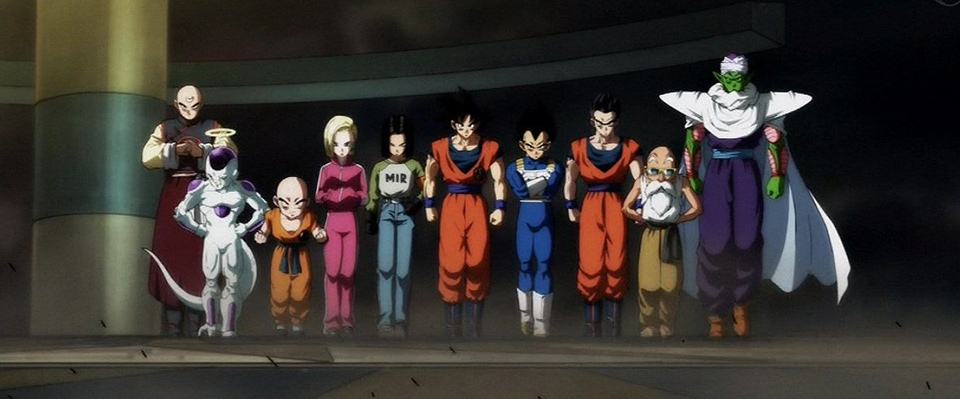
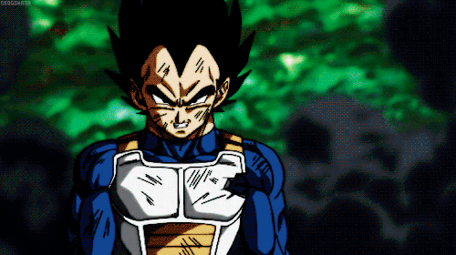
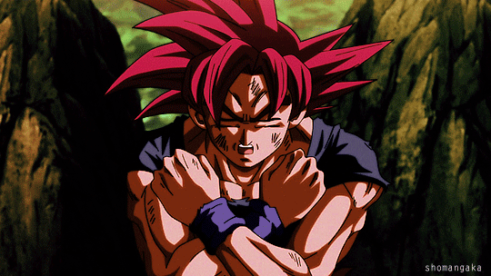
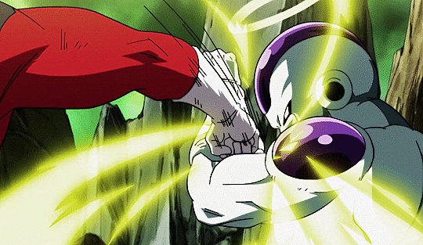

Arco del Universo 6 contra el Universo 7
El Arco del Universo 6 contra el Universo 7 (第６宇宙ＶＳ第７宇宙編, Dai-roku Uchū bāsasu Dai-nana
Uchū-Hen[1]), también conocido como Arco del Universo 6[2] (第６宇宙編, Dai-roku Uchū-Hen) o Arco del
Dios de la Destrucción Champa (破壊神シャンパ編, Hakai-shin Shanpa-Hen), es el segundo arco del manga de
Dragon Ball Super, tercer arco del anime de Dragon Ball Super y y tercer subarco del Arco de los
Dioses del Universo. El arco se trata de un torneo entre Beerus y Champa, enfrentándose para ver
quien poseerá las Super Esferas del Dragón.
Después de un tiempo, Goku y Vegeta vuelven al planeta de Beerus para seguir su entrenamiento, de
pronto aparece Champa y su asistente Vados del Universo 6. Vados revela que Whis es su hermano
menor, y que Champa es el hermano gemelo de Beerus, Whis también explica que hay 12 Universos y que
cada uno tiene su contrario. Champa prueba la comida del planeta Tierra, la cual es mucho mejor que
la de ambos universos. Champa desea tener el planeta Tierra, ya que la Tierra del Universo 6 esta
completamente destruida y le ofrece un cambio con seis de las originales súper esferas del Dragón,
ya que las de Namek son la imitación de las que él tiene. Beerus acepta y se deciden realizar un
torneo entre los mejores guerreros de ambos Universos. Goku y Vegeta recomiendan realizar un torneo
con las reglas del Torneo de las A.M. de la tierra el cual es aceptado, y el lugar será en un
planeta no habitado que se encuentra entre el Universo 6 y 7. Al faltar solo cinco días para el
torneo, Champa y Vados arreglan el planeta y posicionan las seis súper esferas del Dragón alrededor
del planeta. Para encontrar la última súper esfera, reúnen las esferas de la tierra pero son
limitadas, Bulma decide hacer un radar el cual abarque el rango de una galaxia, por lo que llama a
Jaco para dirigirse al centro del Universo. Beerus revela al primero de cinco luchadores, Monaca,
quien es más fuerte que Goku, siendo el segundo y Vegeta tercero.
Todos se enteran del torneo, pero solo se necesitan dos para estar completos. Krilin se pone al
tanto por Vegeta, pero no podrá participar. Goku insta a Majin Buu a participar en el torneo, pero
al no estar interesado Goku le ofrece pedir un deseo de las Súper Esferas del Dragón, a pesar de la
advertencia de Vegeta, Buu acepta y Goku asegura arreglar eso en un futuro. Goku le ofrece a Gohan
ser el último en unirse, pero al faltar sólo tres días rechaza la oferta, siendo Piccolo el que
acepte. Goku y Vegeta deciden ir al Salón del Espíritu y Tiempo y Beerus junto a Whis se dirigen al
planeta de Monaka para ofrecerle participar en el torneo. Finalmente Jaco llega a la Tierra, y junto
a Bulma se dirigen a una estrella donde se encuentra un personaje llamado Zuno, quien puede
responder la pregunta que sea. Al no haber reservado una cita, deberán volver en siete años más. Sin
embargo, Jaco reconoce a un criminal llamado Gekkeman y lo arresta, tomando su lugar. Bulma le
pregunta a Zuno sobre las súper esferas, pero solo consigue saber la historia de las súper esferas y
no su ubicación, ya que solo tenía tres preguntas y desperdició las otras dos con preguntas
puntuales. Bulma y Jaco vuelven a la Tierra, y Jaco se retira al haber cumplido con Bulma.
Goku y Vegeta estuvieron tres días en el Salón del Espíritu y Tiempo, y ha llegado el día del torneo
universal. Whis los traslada a todos al planeta de Beerus, donde se encuentran con el y Monaka, un
luchador de apariencia débil y bajo de estatura. Al llegar a la estrella sin nombre, Goku se
encuentra con el Kaio-shin del Este y Kibito separados, quienes le pidieron a unos Namekianos que
los separaran con las esferas del Dragón. Los guerreros de ambos universos harán una prueba antes de
iniciar los combates, pero Majin Buu se ha quedado dormido dejando solo 4 luchadores del equipo de
Beerus. Los primeros en pelear serán Goku y Botamo. Goku inicia un ataque cuerpo a cuerpo, pero sus
ataques no le hacen daño al cuerpo de Botamo, ya que su cuerpo absorbe los impactos enviándolos a
otra dimensión. Goku derriba a Botamo y lo arrastra a la orilla del cuadrilátero y con un
lanzamiento lo envía fuera, ganando Goku la primera pelea.
El segundo combate es entre Goku y Frost, quien es el opuesto de Freeza siendo una persona
respetuosa. Goku le pide que se transforme y use su máximo poder, transformándose en su 4° forma.
Goku se transforma en Supersaiyano de Primer Grado y derrota fácilmente a Frost, pero recibe un
golpe lento en la mano quedando extrañamente debilitado, siendo sacado de una patada del
cuadrilátero, convirtiendo a Frost en el ganador. Goku ha sido derrotado por Frost, y Chi-Chi corre
hacia Goku pensando que está muerto. Al ser despertado de la inconsciencia por Chi-Chi, Goku se da
cuenta que ha perdido, y es reconocido por Frost como un gran luchador. Goku es regañado por Beerus
quien en su defensa afirma que sólo utilizó el poder del Supersaiyano ordinario siendo esa la causa
de su derrota, aun así Vegeta se rehúsa a creer que Goku haya perdido con un golpe tan débil. Jaco
busca otra ubicación y se sienta junto a Vegeta para poder ver mejor, mientras que el siguiente
combate será entre Frost y Piccolo. En la pelea, Piccolo intenta acumular la mayor cantidad de Ki
para usar un Makankosappo, pero a cambio recibe una gran herida en su pierna, perdiendo equilibrio
en la lucha. Frost es atrapado por los brazos de Piccolo, y antes de recibir el Makankosappo ataca
de la misma forma que atacó a Goku dejando a Piccolo algo mareado, liberándose y dándole un gran
golpe en el torso, siendo declarado vencedor.
Jaco nota que Frost tiene un arma en la mano, como una especie de aguja, por lo que es revisado y
confirmado como ilegal siendo descalificado y tomándose la derrota de Piccolo como nula. Frost se
declara así mismo como un ser que crea guerras para luego acabar con ellas y así comprar planetas
más baratos. Esto causa el odio espontáneo de Vegeta quien le pide a Piccolo que se rinda, quien a
regañadientes acepta, Vegeta le pide al árbitro no descalificar a Frost para así él enfrentarlo en
el siguiente combate.
El siguiente combate será entre Frost y Vegeta, quien se convierte en Supersaiyano y derrota de un
solo golpe a Frost. Goku es reintegrado por haber sido eliminado por un arma ilegal. Beerus dialoga
con Goku, quien elige a Monaca como último peleador por ser el más fuerte, pero Whis hace notar que
Monaca es una farsa. Champa y Vados crean nuevas reglas y un nuevo cubo protector encogiendo el
limite del campo de batalla, a pesar de una discusión sin resultados con Beerus. Frost intenta
robarse los premios de Champa para los guerreros del Universo 6, pero es derrotado por Hit. El
siguiente combate será entre Vegeta y Magetta.
Éste mantiene acorralado a Vegeta a causa de la nueva barrera, ya que expulsa lava desde su cuerpo y
aumenta su temperatura drásticamente, provocando que Vegeta respire y se mueva con dificultad. A
pesar de estar convertido en Supersaiyano, Vegeta es lanzado fuera del campo de batalla, pero el
árbitro anuncia que su pie ha tocado un trozo del campo por lo que no ha sido eliminado. Vegeta
explota en ira y ataca a Magetta con un Destello Final, desestabilizándolo y dándole un gran golpe
luego de llamarlo chatarra eliminándolo. Luego, Whis explica que Magetta es muy fuerte pero
sentimental.
El siguiente combate será entre Vegeta y Cabba. Tiene las mismas habilidades que Vegeta lo que lo
deja sorprendido, además sus poderes son similares por lo que Vegeta se convierte en Supersaiyano.
Al ver la diferencia de poder, Cabba le pide a Vegeta que le enseñe a transformarse, por lo que
oculta sus intenciones de enseñar golpeándolo y amenazándolo con destruir su planeta. Al escuchar
eso Cabba se convierte por primera vez en Supersaiyano, pero es dejado inconsciente luego de que
Vegeta se convirtiera en Supersaiyano Azul. Como Vegeta vio que Cabba estuvo por rendirse, le exige
que lo supere y que no olvide el honor y orgullo de los saiyanos.
El siguiente combate será entre Vegeta y Hit.
Hit es reconocido como un sicario, que además tiene 1000 años de edad y es el más fuerte del sexto
universo. Vegeta se transforma en Supersaiyano Azul, pero recibe una serie de golpes tan rápidos que
nadie es capaz de ver, logrando eliminarlo y reconociéndolo como el único que ha aguantado tantos de
sus golpes. El siguiente combate será entre Hit y Goku, pero antes de comenzar averigua que Hit
salta por el tiempo en 0.1 segundos, deteniendo el tiempo a su antojo en ese lapso. En el combate,
Goku se cubre en el momento del ataque de Hit y contraataca dándole un pequeño rasguño, siendo el
primero en la historia en hacerle daño. Seguido de esto, Goku se transforma en Supersaiyano Azul
para comienza a explotar su estrategia, que consiste en predecir el movimiento de éste para así
golpearlo hasta que no pueda más. Hit, a punto de perder, usa su habilidad de aprender y logra
igualar el poder de su oponente, llegando a lograr humillarlo con una mejora de su técnica de salto
temporal aumentado a 0.5 segundos. Debido a la gratitud que él sintió gracias al aumento drástico de
poder, deja recuperar a Goku para continuar con el combate un poco más, aunque éste ya casi no pueda
moverse. Acto seguido, Goku opta por usar su técnica secreta y más poderosa hasta ahora, el Kaio-ken
en Supersaiyano Azul, quien logra ser superior al salto temporal de Hit.
Nuevamente con su habilidad de aprender, Hit logra nuevamente a estar al nivel de Goku, el cual ya
no puede seguir manteniendo su técnica. Al ver como Hit no utiliza todo su poder para evitar
matarlo, éste pide que la regla de "no matar" sea anulada, lo que lleva a una fuerte discusión entre
Beerus y Champa; lo que conlleva a Goku a rendirse para así, poder reanudar el combate esta vez sin
reglas.
El siguiente combate será entre Monaka y Hit, el cual acaba rápidamente porque Hit se deja ganar
para así quedar a mano con Goku, lo que deja al Universo 7 como ganador del torneo.
Furioso, Champa decide matar a todos sus peleadores por decepcionarlo, pero justo en ese momento
llega un pequeño ser acompañado de dos guardaespaldas en medio del ring del torneo, en el que
inmediatamente se nos revela que se trata de Zeno, el Rey de Todo. Asustados, Beerus y Champa se
arrodillan frente a él, debido a que no estaban haciendo su trabajo de "Dios de la Destrucción";
pero éste aclara que no está por esa razón, sino que él ha estado observando el torneo y dado que le
encantó la idea decidió hacer otro, esta vez con los doce universos.
Los peleadores de ambos lados se despiden y los del equipo de Champa vuelven a su respectivo
universo; todo ya hecho, avanzan con la búsqueda de la última esfera, la cual resulta ser el planeta
en el que han estado todo este tiempo, por lo que deciden llamar al Dios Dragón. Beerus pide su
deseo, el cual nadie lo sabe por ser secreto y por haberse dicho en el idioma de los dioses. Mas
tarde se nos revela, que el deseo que pidió fue la reconstrucción del planeta Tierra del Universo 6,
con su población y demás, para que así Champa pudiera disfrutar los platillos de ahí. Todos vuelven
a la Tierra y Monaka a su trabajo, esperando el próximo torneo.
Luego del Torneo de la Asociación Universal de las Artes Marciales, Son Goku y sus amigos llegan a
la Tierra, por la victoria obtenida en el Torneo Universal, Bulma decide realizar una fiesta
invitando a todos sus amigos y a Beerus y Whis, Bulma le pide a Beerus que invite a Monaka sin
embargo en secreto Beerus no le informa nada puesto que si Vegeta y Goku se enterasen, ambos
perderían la intención de ser mas fuertes que Monaka.
Jaco ordena unos extraños dulces que deben ser entregados en la tierra por un repartidor
intergaláctico, el cual al final resulto ser Monaka, al ver a este ultimo, Mr. Satán le recuerda que
se ha convertido en la imagen oficial de su gimnasio y que creo una mascota para su gimnasio con su
forma la cual resulta ser Pizza disfrazada.
En medio de una discusión Goten y Trunks terminan hiriendo a Monaka quien comienza a llorar, tras la
llegada de Beerus, este explica que Goku no debe enterarse que Monaka es un fraude por lo cual los
Guerreros Z se disponen a evitar que esto ocurra, Chi-Chi le ordena a Goku ir a su casa a cambiarse
de ropa, pero este llega muy rapido por lo que Beerus le ordena que haga un millón de abdominales
que Goku realiza rápidamente.
Finalmente Trunks le propone al dios de la destrucción que utilice la Botarga de Monaka que Pizza
estaba utilizando, tras aceptar, Beerus ahora disfrazado de Monaka comienza una dura batalla contra
Goku; Whis pronto advierte que una batalla de esa magnitud es peligrosa para la Tierra por lo que
Puar toma la forma de Beerus y ordena detener el combate.
Un día después de la farsa de Monaka, Goku quien se encontraba en su casa no actúa como el Goku
normal incluso rechazando la gran mayoría de los Platillos que Chi-Chi le preparó, a lo que su
esposa cree que seguro este va a morir y explica que ha tenido problemas para volar y controlar su
Ki a lo que su esposa le pide que vaya con el Kaio del Norte, tras varios intentos fallidos de
Teletransportación donde fue a dar a la Aldea Pingüino, la Torre de Karin y la Corporación Cápsula,
finalmente Goku llega al Planeta Kaio donde el Kaio del Norte le explica que esta sufriendo de un
Retardo de Ki por lo que deberá dejar de usar su Ki de forma irresponsable hasta curarse.
En el trascurso de regreso a su casa, Goku termina destruyendo la edificación con su hijo y esposa
dentro de ella, la cual se enfurece con Goku. Finalmente la Familia Son se queda por un tiempo en la
Casa de Gohan mientras que Videl y Gohan se hallan fuera de la ciudad, quedándose con Piccolo y Pan.
Al día siguiente la Banda de Pilaf intentan vengarse de Goku, encontrándose a Pan sin embargo al
escuchar como Piccolo estaba enojado por el desaparecimiento de la Bebé estos huyen asustados sin
embargo Mai termina llevándose a Pan y en medio de un desastre, Pilaf acciona la autodestrucción de
la maquina donde escaparon pero al destruirse, estos son salvados por Pan.
Finalmente los adultos creyeron que Pan se había quedado adentro de la casa y finalmente llegan
Gohan y Videl.
Una vez reparada la casa de Goku, nuevamente este y su familia regresan a ella; Bulma a quien le
encantaron los dulces ordenados por Jaco, ordena una caja para ella siendo estos entregados por
Monaka; Bulma le pide a Monaka que la ayude con uno de sus experimentos.
Durante este proceso, Goten y Trunks quien observaron que Monaka estaba en la Corporación Cápsula
deciden saludarlo mas al no encontrarlo en el camioneta repartidora estos deciden ver la bodega
donde encuentran una espada de juguete y un Juguete Expandible,
Goten abre el empaque del juguete el inflable el cual termina creciendo y atrapándolos en la
camioneta el cual los niños no quieren destruir al tratar de salir por lo que se quedan en este
hasta que Monaka lo abra, sin embargo no lo abre y continua con su próximo envío al Planeta
Pot-au-feu.
Una vez en el planeta, Monaka abre la bodega y termina encontrándose a los niños congelados por las
extremadamente bajas temperaturas del espacio sideral ; Monaka termina descongelando a los niños y
le entrega un envío a Potage un anciano quien esta ha cargo de la protección de una misteriosa
sustancia que se encuentra en el planeta.
Pronto aparece un pelotón liderado por Gryll quienes intentan robar la llave que trae Potage para
poder romper el sello y liberal el Comméson, sin embargo Goten y Trunks logran detenerlos pero
Potage pierde la llave y los piratas toman a Monaka como rehén.
Todos son capturados y finalmente Gryll rompe el sello y libera el Comméson. Gryll sin saberlo
termina siendo absorbido por el Comméson la cual origina una copia mucosa de este llamado Gryll
Falso; Finalmente Trunks, Potage, Monaka y Goten logran escapar para encontrarse con Vegeta y Jaco
quienes habían sido enviados por Bulma a buscar a los niños.Vegeta logra destruir a las replicas de
varios miembros del pelotón de Gryll; sin embargo el Comméson lo captura y termina dando origen al
Vegeta Falso; Ahora el verdadero Vegeta termina sin su poder y esta muy debilitado.
La copia de Vegeta quien representa una verdadera amenaza para todos, se propone a usar su Ataque
Cnidario para crear mas replicas mucosas.
Goku quien ahora se a recuperado de su retardo de Ki llega al planeta, él termina enterándose de lo
sucedido y decide destruir al Vegeta Falso, las cosas empeoran cuando el Vegeta real comienza a
desaparecer por la ausencia de energía y la única forma de impedir que fallezca sera derrotando a la
copia mucosa.
Goku decide transformarse en Supersaiyano Azul pero para su sorpresa, la copia de vegeta también lo
puede hacer sin embargo, Goku la termina engañando y con un Super Kamehameha termina destruyéndola y
salvando así al Vegeta real.
Regreso al Planeta Tierra
Una vez destruida la amenaza, Potage les agradece a los saiyanos y a Monaka por su ayuda, encierra
nuevamente el Comméson y se despide.
Al llegar a la tierra, Goten es regañado por su madre al igual que Trunks, pero en un futuro lejano
una amenaza aparece...
Arco de Trunks del "Futuro"
La Saga de Trunks del "Futuro"[1] (”未来”トランクス編, "Mirai" Torankusu-Hen) es el tercer arco del manga de
Dragon Ball Super, cuarto arco del anime de Dragon Ball Super y cuarto subarco del Arco de los
Dioses del Universo. Se estrenó el 12 de junio con el episodio 47.
Eventos de los años 795 y 796
En la línea alternativa de Trunks del futuro, tanto éste como Bulma del futuro y Mai del futuro son
los únicos sobrevivientes luego de la aparición de un enemigo con una increíble capacidad
destructiva, y que es aparentemente invencible, nombrado por los sobrevivientes como "Black". Bulma
ha logrado juntar durante un año la fuente de poder de la máquina del tiempo, y en cuanto se lo
entrega a Trunks, Goku Black aparece destruyendo la planta en la que se encuentran, asesinando Bulma
de una forma rápida y contundente. Trunks logra escapar reuniéndose con Mai para dirigirse a la
máquina del tiempo, pero son seguidos por Black, quien deja inconsciente a Mai.
Trunks tiene una lucha con Black, pero es superado inmensamente por este quien asegura que será
asesinado por el. Mientras que en el presente, Goku se encuentra cosechando su huerta de lechugas,
compitiendo con Piccolo como prueba de un entrenamiento. Krilin revela que Bulma le contó que Vegeta
se encuentra con Whis entrenando, por lo que Goku se tele-transporta al planeta de Beerus de
inmediato. Trunks intenta sobrevivir al ataque de Goku Black, intentando tomar la fuente de la
máquina del tiempo y lograr viajar al presente.
Black logra herir gravemente a Trunks en combate, pero tras lanzarle su espada y luego de un ataque
por parte de Trunks, este lograría escapar tras la distracción. Trunks sube a la máquina del tiempo,
pero en el exterior se encuentra con Goku Black, quien intenta matarlo, mas Trunks lograría viajar
en el tiempo con éxito, justo antes de ser alcanzado por un Kamehameha Oscuro.
En el presente, Trunks del futuro aparecería en el patio de la casa de Bulma del presente, siendo
visto por Pequeño Trunks y la banda de Pilaf. Trunks llama a Bulma quien se contacta con Whis, para
avisar a Vegeta y Goku sobre la llegada de Trunks del futuro. Goku se tele-transporta a la tierra
junto a Vegeta, Beerus y Whis y luego se dirige a la torre Karin para pedir Semillas Senzu. Cuando
Trunks del futuro se recupera tras comer una Semilla Senzu que Goku le trajo de la torre Karin,
intenta atacar a Goku, quien detiene su golpe casi sin ningún esfuerzo, de forma inmediata,
sorprendiendo a todos a su alrededor. Tras el malentendido y la confusión Goku Black aparece de la
nada entre tempestades y de una forma muy amenazante para combatir a los Guerreros Z.
Después de que Black llegara al pasado, él ya conocía a Goku, Vegeta y a Beerus. Trunks del futuro
inmediatamente quiere ir a pelear contra Black, pero Vegeta le dice que no. Goku desafía a Black a
tener una pelea, mientras que Whis y los demás miran la batalla con el cetro de Whis.
Goku no dura mucho peleando en su estado base ya que después de que Black lo estrellara contra una
montaña Goku se transforma en Supersaiyano 2 y él en seguida eleva su Ki. Black tenía la ventaja
hasta que la energía oscura del Tiempo se empieza a llevar a Black y este se debilita y es cuando
Goku le da una patada en el pecho y este vuelve a elevar su Ki, debido a que la patada de Goku lo
hace más fuerte, éste lanza a Goku al suelo fuertemente provocando una ola de viento que hace que la
máquina del tiempo se caiga y debido al grito de Trunks del futuro, Black se da cuenta y se distrae
a lo que viene Goku y le da un golpe pero la energía oscura vuelve a tratar de llevárselo pero este
antes de irse destruye la máquina del tiempo y se lleva a Black a la línea del futuro alternativa,
cuando regresa se aprieta fuertemente el pecho debido a la fuerte patada y golpe que Goku le dio y
cae en picada hacia el suelo y se recupera bastante rápido para terminar riendo de una manera
malvada.
Devuelta al presente, los demás están viendo como se quema la máquina del tiempo, Trunks del futuro
se enoja sabiendo que ya no hay esperanza pero Vegeta le dice que ese no es su verdadero poder ni el
de Goku, después aparece la Banda de Pilaf vestidos de bomberos y con una manguera para apagar el
fuego de la Máquina del tiempo, a Bulma se le ocurre una idea y sale corriendo a buscar algo en su
laboratorio. Después de una conversación con Whis y Beerus, Trunks se pone triste pero Vegeta lo
anima diciéndole que no se rinda. Hasta que por fin aparece Bulma toda sucia con una cápsula la cual
contiene la máquina del tiempo de Cell y como escena final se ve a Mai del Futuro Alternativo y se
descubre que está viva.
Después de que Bulma diera a conocer la Máquina del tiempo en la que Cell viajó, a lo que todos se
quedaron sorprendidos y confundidos pero ella les contó como se la quedó. Ella cuenta lo sucedido
cuando la encontraron y también cuenta que cuando Trunks se iba a su futuro, ella le pidió la
capsula donde estaba la maquina del tiempo de Cell para investigar sobre ellas pero al final no
entendió nada y se olvido de ella. La máquina estaba muy sucia por lo que cuando le preguntan a
Bulma si ya pueden ir al futuro, dice que no. Goku le pregunta a Bulma si aún hay tiempo, ella le
dice que sí y este inmediatamente le pide a Whis que lo entrene pero este se niega a entrenarlo ya
que han aparecido muchas maquinas del tiempo, y eso lo molestó. Piccolo le dice que porque mejor no
entrena con Vegeta, pero este se niega y se va a entrenar al Cuarto de Gravedad. Goku, al ver que
nadie quiere entrenarlo, se fue con Kaio del Norte pero éste también se niega y le dice que se vaya
de su planeta. Mientras que Black sigue destruyendo lo que queda de una ciudad. Devuelta al
presente, los padres de Bulma llegaron de sus vacaciones y se sorprenden al ver toda la destrucción,
estos van a saludar a todos, Panchy saluda a Trunks del Futuro, y le pregunta si vino a entrenar con
Goku pero Bulma le dice que no hay tiempo para hablar. Bulma le pide a su padre que la ayude a
entender como funciona la maquina y a la Banda de Pilaf que la ayuden a reparar la maquina a lo que
estos aceptan para así robar la tecnología del futuro y así conquistar el mundo.

Trunks del Futuro ve a Mai y le agarra la mano y ella le pregunta que paso con su yo del futuro,
luego Bulma les dice a los demás que es hora de que se pongan a limpiar la maquina y les dice a
Piccolo y a Krilin que se pongan a limpiar el patio, estos se desaniman pero Piccolo le dice a
Krilin que piense como si fuera un entrenamiento, mientras que Mai sigue hablando con Trunks del
futuro sobre su yo del futuro, Trunks le cuenta que durante el primer ataque de Goku Black la mitad
de la humanidad fue destruida, los ejércitos de todo el mundo atacaron a Black pero no funciono, y
dice que las personas que quedaron formaron una alianza para derrotar a Black y que la líder es Mai,
mientras se ve como la resistencia combatía contra Black, los soldados que quedan empiezan a
dispararle a Black pero este agarra todas las balas y empieza a disparar ondas de energía a todos,
haciendo que algunos soldados mueran y los que quedaron se escondieron en un bunker, excepto Mai
quien se escondió detrás de una pared para activar una explosión la cual derriba un montón de
edificios los cuales caen sobre Black, pero cuando Mai cree que lo derrotó, este sale de los
escombros con el Ki elevado, y es cuando aparece Trunks en Supersaiyano, Black le dice que los
humanos son un error y deben ser eliminados, haciendo que Trunks se enfurezca pero Black lo vence
fácilmente, lanzándolo contra el suelo, Trunks se para y eleva su Ki lanzando una ráfaga de energía
contra Black, pero no le hace nada y justo cuando Goku Black lo va a atacar, Mai dispara provocando
un destello que hace que Black no pueda ver, para así rescatar y salvar a Trunks, después regresan a
su refugio y Mai esta curando las heridas de Trunks mientras que lo anima para que no se sienta
culpable con el mismo.
Trunks del futuro termina de contarle todo a Mai del presente esta se siente muy alagada pero Trunks
del presente se siente celoso y le pregunta su yo del futuro por qué no vino con esa Mai de la que
habla, a lo que este le responde que es porque ella esta muerta, después llegan Pilaf y Shu a buscar
a Mai para que les ayude a arreglar la maquina del tiempo, y Trunks le dice a Mai que ella lo ha
salvado muchas veces en su futuro, después aparece Goku y le dice a Trunks que se relaje, Bulma le
dice a los demás que antes de arreglar la maquina del tiempo deben limpiarla y Mai sigue pensando en
Trunks del futuro pero Trunks joven sigue celoso de su contraparte. Beerus esta hablando con Whis
sobre el extraño Ki de Goku Black y Whis le dice que va a investigar sobre eso.
Bulma está arreglando la Máquina del tiempo, Mai y Shu están ayudando a Bulma, llevándole sus
herramientas, Bulma le pide a Mai una herramienta la cual esta en otro laboratorio, Trunks quiera
ayudar llevando a Mai al laboratorio, mientras tanto el Dr. Brief está trabajando con Pilaf, Mai
está buscando el "Deformador de Ondas", Trunks quiere ayudar pero mostraba cosas erróneas, A Trunks
le vino una idea para poder conquistar a Mai, este imita a Trunks del Futuro, pero Mai no le muestra
interés. Mientras tanto en el Cuarto de Gravedad, Vegeta está entrenando y le viene un rencor a él
de Black por aniquilar a su familia en el Futuro Alternativo, enfureciéndose y destruyendo así todas
las máquinas de entrenamiento.
Mientras en el jardín de la Corporación Capsula se encuentran Beerus, Whis y Goku y ha él y a Beerus
les ha dado hambre, Whis empieza a investigar quien es realmente Goku Black. Mientras tanto en un
cuarto está Trunks del Futuro durmiendo, mientras tiene un sueño sobre Goku Black asesinando a Mai
del Futuro Alternativo y éste despierta pensando que Black está ahí con el, sacando su espada para
defenderse, éste reacciona y se va a donde están Bulma y los demás, Trunks le pregunta a Bulma que
como esta, ella le dice que le tomara tiempo arreglar la Máquina del tiempo pero que ya sabe cual es
el combustible que usa la máquina, el cual es el que ella estaba creando en episodios pasados. Bulma
le dice que le tomara un día llenar el tanque de combustible de la máquina, Trunks se sorprende por
lo rápido que sera ya que en su futuro les tomaba un año llenar la mitad, debido a que estaban
cortos de materia prima. Bulma le dice que se quite esa ropa sucia y se ponga la ropa que le dejó en
su habitación. Piccolo y Krilin están arreglando el jardín pero Piccolo no quiere seguir trabajando,
Trunks del Futuro se va al jardín donde ve a Piccolo y a Krilin trabajando, esté le pregunta donde
está Gohan, pero Piccolo inmediatamente le dice que sería inútil que se llevara a Gohan al Futuro,
porque él ya es un estudiante, pero no preguntaba por eso, Trunks les cuenta lo sucedido con su
maestro en el futuro. Trunks se va a esperar a Gohan a que salga de la reunión que tiene, Gohan al
fin sale de su reunión, este pasa al lado de Trunks pero no lo reconoce ni Trunks a el, Gohan sigue
caminando y es que se da cuenta que es Trunks del futuro, el lo saluda pero Trunks se sorprende de
que ese sea Gohan y así es como Trunks y Gohan se reencuentran con el asombro de Trunks al ver a un
Gohan adulto totalmente diferente al de su tiempo. Gohan lo invita a comer un helado a lo que Trunks
acepta, Trunks no deja de estar impresionado y de dejar de pensar que una persona tan fuerte y con
mucho poder se convirtió en un estudiante con un nivel muy bajo y débil.
Mas tarde lo invita a comer a su casa y conoce a Videl y a Pan con lo cual también se impresiona de
su familia. Pan se empieza a portar mal y empieza a volar por la casa y Gohan se convierte en el
Gran Saiyaman haciendo que Trunks se quede atónito de la vergüenza. Trunks esta viendo videos con
Mr. Satán y Pan, mientras Videl cocina y Gohan hace un reporte, Videl le dice a Mr. Satán que la
ayude dejando a Trunks cuidando a Pan siendo incapaz de cuidarla debido a su inexperiencia con los
bebes haciendo que Pan destruya todo. Gohan al fin termina su reporte, cuando entra a el cuarto
donde están Trunks y Pan, ella esta tratando de quitarle la espada a Trunks, Gohan la detiene.
Después Gohan y Trunks están en el patio sentados en un columpio hablando y después Gohan se pone a
jugar con Pan y Videl los llama para comer, Trunks se queda viendo toda la felicidad y paz en la que
viven y se imagina como seria la vida si Goku Black no hubiera aparecido. En la noche Trunks se va y
se despide de todos. A Gohan se le olvida preguntarle a Trunks por que regreso al presente. Trunks
regresa a la casa de Bulma y llega con su nueva ropa. Se ve a Goku, Beerus y Whis viajando a el
Universo 10. Al final aparece Zamas.

Trunks del futuro, Vegeta y Goku son derrotados por Black, con heridas de gravedad. Black adquiere
el Supersaiyano Rosáceo y aparece Zamas del futuro como supuesto aliado de Goku Black. Yajirobe del
futuro los rescata junto con Mai y logran los tres escapar al pasado.
Trunks del futuro, Vegeta, Goku y Bulma viajan. Black logra dañar de gravedad a Goku, revelándole
que su identidad es Zamas del presente, que cambió cuerpos con Goku tras pedir un deseo a Super Shen
Long y matar a Gowas y solo mantuvo su corazón dentro del cuerpo del saiyano, matando a su familia.
Luego viajaría al futuro para aliarse con Zamas del futuro. Tras acusar de "pecador" a Trunks y ver
a Goku y Vegeta imposibilitados de luchar, Trunks se enfurece y alcanza el Supersaiyano Iracundo,
logrando contener momentáneamente a Zamas y Black mientras los demás viajan al pasado.
Goku aprende el Mafuba de Kame-Sen'nin y Vegeta planea una estrategia para viajar al futuro
nuevamente. Gowas ha decidido intervenir, dado que fue por causa suya que Zamas causara toda esta
crisis y tragedia en las líneas de tiempo y en los doce universos.
Mientras Zamas pone otra queja sobre los defectos de la humanidad, Vegeta pide a Goku el frasco del
Mafuba. Goku se da cuenta de que estaba en la máquina del tiempo. Sin el tarro, Vegeta figura que
tiene que enfrentarse a ellos a base de golpes. Antes de que puedan empezar a luchar, Gowas y el
Kaio-shin del Este llegan, habiendo llegado a través de los anillos de tiempo. Gowas se siente
avergonzado con Zamas a cabo por sus acciones, pero sus dos contrapartes permanecen sin
arrepentimiento. Gowas le dice a Zamas que no es demasiado tarde para arrepentirse; que pueden
incluso utilizar las Superesferas del Dragón para revivir a los que ha matado. Pero los dos Zamas
mencionan que ya las destruyeron. En cualquier caso, Gowas y el Kaio-shin del Este están
determinados a quedarse y ver este asunto hasta el final.
Vegeta opta por enfrentarse a Goku Black, ya que no perdería frente al Goku real, por lo que,
naturalmente, no perderá ante el falso tampoco. Los dos empiezan a pelear, y Black está sorprendido
por la cantidad en la que Vegeta ha mejorado en un tiempo tan corto. Mientras tanto Goku intercambia
golpes con Zamas, cuya inmortalidad viene en tan útil como siempre. La batalla continúa, y Vegeta
parece tener la ventaja. Dice que Goku Black calculó mal cuando robó el cuerpo de Goku, porque en
última instancia solamente Goku puede usar ese cuerpo en todo su potencial y no es más que una
falsificación, mientras que él es el verdadero príncipe de los saiyanos. Vegeta sigue golpeándolo,
pero sabe que él no morirá tan fácilmente ya que este mejoró sus poderes de nuevo, Black se da
cuenta de que la por las lesiones de Vegeta fue lo que permitió mejorar tan rápidamente. A pesar de
que considera al desencadenamiento de la ira "una técnica mortal sucia", hace uso de la misma para
la creación de un nuevo ataque El Trabajo de un Dios, combinando sus habilidades de espada, su poder
saiyano y su ira.
Aunque Vegeta esquiva la guadaña, se abre un agujero en el cielo. Incluso Black no sabe a dónde va
pero dice que quizás vaya a otro universo, tal vez al pasado lejano o en el futuro. Su poder incluso
sorprende así mismo. Por otro lado, Zamas se alegra del nuevo poder de Goku Black. Lejos en la
Corporación Cápsula, Trunks pide Mai a utilizar sus binoculares para comprobar cómo va la batalla,
pero se ve que Zamas se dirige hacia la ciudad. En el garaje, Bulma dice que la máquina del tiempo
aún no está lista. Sólo hay una manera de mantener a raya Zamas, el Mafuba. Afortunadamente Trunks
ha pegado el frasco de nuevo junto y ahora sólo tiene que dominar la técnica. Mientras tanto, Goku y
Vegeta se enfrentan contra Black. El humo de alrededor de los bordes de la grieta forma en el cielo
clones de Goku Black y dice que no importa cuántos Goku y Vegeta derroten, ya que se forman aún más
constantemente. Goku Black se burla de ellos, diciendo que nunca serán capaces de perseguir a Zamas
así y que él va a matar a Trunks y los demás. Por ahora Goku intenta teletransportarse a Trunks,
pero todo el Ki de los clones le impide centrarse en el Ki de Trunks.
Trunks se enoja al ver que Zamas ataca a Bulma. Zamas la tira, aparentemente muerta. Trunks usa el
Mafuba sellándolo dentro de la jarra con ayuda de Mai. Bulma lo felicita por un trabajo bien hecho.
Ella le dice a Trunks para sellar el talismán mágico en el frasco con el fin de completar el sello,
pero resulta que lo han olvidado con Kame-Sen'nin. Zamas sale de la jarra, una vez más. Black
detecta el Ki de Zamas debilitado, y se teletransporta a ver lo que pasa. Sus clones y la grieta se
desvanecen, lo que permite a Goku a teletransportarse igualmente. Ahora todo el mundo está todo en
un solo lugar. Ambos dicen que los humanos no son simplemente errores después de todo; que no pueden
bajar la guardia. Los dos deciden mostrar su verdadero poder divino. Como Goku y compañía. mirar con
horror, al ver que Zamas del futuro y Black utilizan sus pendientes Pothala para fusionarse en un
solo ser, Zamas Pothala. En ese instante, la esencia de Black pasa a formar parte de la de Zamas del
Futuro Alternativo.
Son Goku y Vegeta siguen siendo totalmente superados por la Fusión de Zamas. Goku piensa que este
debe ser el poder de un dios, pero Vegeta dice que dios o no, nunca ha conocido a nadie que emita
este tipo de Ki antes. Vegeta enloquece porque Zamas simplemente está jugando con ellos, mientras
que incluso los Kaio-shin dicen que ha ido mucho más allá de todo lo que puedan entender. Sin
embargo, Goku y Vegeta todavía se niegan a rendirse.
Zamas continúa completando su Plan Cero Humanos y creando un nuevo mundo. Crea una extraña criatura
parecida a un pájaro de energía que se cierne sobre él y dispara la Luz de la Absolución sobre Goku
y Vegeta, hiriéndolos hasta el punto de que regresan desde el Supersaiyano Azul hasta la forma base
de ellos. Los sobrevivientes huyen de la desmoronada ciudad, y Trunks salva a Maki de algunos
escombros que le caen. Este le dice a Yajirobe que lleve a todo el grupo a la meseta donde Bulma y
Mai están, y vuelve a volar para luchar contra Zamas.
Goku y Vegeta se levantan y usan su poder combinado para destruir el halo de energía púrpura de
Zamas. Sin embargo, cuando tratan de atacar al propio Zamas Pothala, este fácilmente bloquea sus
ataques y los vuelve a derribar. Trunks llega, y cuando ve a Vegeta en tan mala forma, utiliza el
Supersaiyano Iracundo de nuevo. Él declara que serán los mortales y no Zamas los que harán un mundo
nuevo. Pensando en Mai y los otros, dispara su Cañón Galick, haciendo que Vegeta se una al choque de
poderes. Aunque este choque de poderes abruma a la Ira Divina Zamas, no le hace daño. Él dispara más
Hojas del Juicio hacia Trunks, pero Vegeta se usa como escudo para protegerlo, causando que quede
fuera del campo de batalla.
Frente al inconmensurable poder y técnicas de Zamas Pothala, junto a la amenaza que representa una
fusión Kaio-shin que busca erradicar a todos los Terrícolas, el único que puede hacerle frente es
Vegetto. Para ello, Goku y Vegeta hacen uso de los Pothala de uno de los dos Kaio-shin de la Línea
1. Vegeta juró que nunca se uniría con Goku de nuevo, pero ahora no hay otra manera. Goku come un
Senzu, y recuerda cómo la última vez que le dijeron que la fusión con los Pothala no tenía límite de
tiempo, Gowas explica que para aquellos que no son Kaio-shin, los efectos de la Pothala sólo duran
una hora. Tendrán que ganar dentro de ese límite de tiempo.
Vegeta se siente aliviado de que sólo tendrá que soportar ser uno con Goku durante una hora. Se
ponen los Pothala y se fusionan en Vegetto, quien le dice a Zamas que dos pueden jugar en ese juego
de "fusión". Vegetto se convierte en un Supersaiyano Azul. Trunks se asombra de su poder. Mientras
tanto, Zamas se pregunta por qué los humanos intentan imitar a los dioses y dice que es porque los
dioses son tan poderosos y hermosos. Mientras Zamas balbucea, Vegetto se cansa de su charla y le da
un puñetazo en la cara. Los dos comienzan a pelear, y al principio Vegetto parece tener la ventaja.
Se burla de Zamas, preguntando si este es realmente el poder de un dios. Entonces Zamas parece salir
en la parte superior, golpeando Vegetto a la tierra, donde permanece boca abajo. Zamas usa el Golpe
de Aura para terminar el trabajo, pero Vegetto contraataca con su Espada de Espíritu Final, diciendo
que Zamas Pothala ya no es inmortal y tampoco puede eliminar a los humanos, porque parte de Goku
permanece en su cuerpo. Pero esto es precisamente lo que Zamas quería: Goku había obtenido el poder
sobrepasando a los dioses, a pesar de ser humano. Como tal, simboliza todos los fracasos que los
dioses han hecho. Al incorporar a Goku en su propio cuerpo, Zamas pretende reparar los pecados de
los humanos y los errores de los dioses. Vegetto se divide de nuevo en Goku y Vegeta. El Kaio-shin
del Este se pregunta por qué se separaron, pero Gowas piensa que podría ser que consumieran
demasiado poder para sostener la fusión, por el Kamehamha Final.
Cuando Trunks se enfrenta a Zamas, comienza a reunir el Ki de Yajirobe, Haru, Maki y el resto de los
refugiados que están observando la batalla. Goku y Vegeta contribuyen con su Ki también, y con el
poder de todos canalizados en su espada, Trunks corta a Zamas por la mitad. Goku felicita a Trunks
por el trabajo bien hecho, comparando su espada con la Genki-dama, Bulma y Mai llegan con la
máquina del tiempo para agradecerle también. Trunks dice que no podría haberlo hecho sin el apoyo de
todos. Sin embargo, de repente el cielo se llena de nubes oscuras que muestran innumerables copias
de la cara de Zamas. A pesar de que ha perdido su cuerpo físico, todavía sobrevive en una forma
extraña, como el gas. Gowas especula que Zamas ahora está tratando de fusionarse con el universo
mismo. Goku y Vegeta tratan de convertirse en Supersaiyano Azul, pero descubren que ya no tienen
suficiente energía después de usar el Kamehameha Final como Vegetto. Independientemente, disparan
explosiones en las nubes de Zamas en sus estados regulares, junto a Trunks Supersaiyano. Sin
embargo, ninguno de sus ataques tiene ningún efecto en las nubes de Zamas, que pronto cubre la
Tierra y empieza a llover abajo ráfagas de energía que caen sobre humanos por todo el mundo. Goku y
los demás protegen a Bulma, Mai, y la máquina del tiempo, pero en todo el mundo, Umigame, Androide
Número 8, y todos los demás quedan eliminados. En el presente, Trunks y el resto de los guerreros Z
ven el rostro risueño de Zamas en el cielo. Whis y Beerus dicen que algo va mal en su propio mundo.
Zamas está afectando de alguna manera al presente, como cuando Goku Black los invadió antes
Cuando el humo desaparece, Trunks no puede percibir el Ki de otra persona. Ahora son los únicos
supervivientes en la Tierra. Aunque sus ataques no funcionan en Zamas, Goku niega darse por vencido,
y toma una semilla Senzu más. Allí encuentra el botón que le dio el Rey de Todo. Goku le pregunta al
Kaio-shin del Este si el Rey de Todo aún estaría presente en este futuro. Kaio-shin piensa así;
Después de todo, nadie podría derrotarlo nunca. Goku presiona el botón, y este aparece en un
instante. Sin embargo, este es el Rey de Todo del futuro, y nunca ha conocido a Goku. Él pregunta
quién es Goku, dónde está, y por qué el lugar parece ser un naufragio. Él encuentra las caras de
Zamas riendo en el cielo, molesto cuando Goku sugiere que las elimine, el Rey de Todo en su lugar
decide destruir el mundo entero. Goku les dice a todos que escapen en la máquina del tiempo,
mientras que los Kaio-shin usan sus Anillos del Tiempo para huir. Zamas y todo el mundo del futuro
desaparece, pero Goku y los demás logran huir al presente.
En el presente, Goku intenta buscar a Rey de Todo del Futuro con la máquina del tiempo y lo lleva al
Palacete del Rey de Todo donde Goku le presenta a su contraparte del presente para que puedan ser
amigos y jugar.
Antes de la inminente llegada de Goku Black, Whis de la línea 1 llega a la línea 7, dividiéndola
otra vez, y le dice a Beerus de esta línea que se ocupe de Zamas antes de que pueda rebelarse,
deteniendo el Plan Cero Humanos. Trunks y Mai de la línea 2 llegan a vivir aquí, ya que su mundo fue
destruido. Esto conduce a tener dos Trunks y Mai existentes lado a lado en esta línea de tiempo,
aunque no tienen un problema con esto.
Arco de la Supervivencia Universal

El Arco de la Supervivencia Universal[1] (宇宙サバイバル編, Uchū Sabaibaru-Hen), también conocido como Arco
del Torneo de la Fuerza (力の大会編, Chikara no Taikai-Hen[2]), es el cuarto arco del manga de Dragon
Ball Super, quinto arco del anime de Dragon Ball Super y quinto subarco del Arco de los Dioses del
Universo. En el anime se emitió desde el 5 de febrero de 2017 con el episodio 77 de Dragon Ball
Super y terminó el 25 de marzo de 2018 con el episodio 131, mientras que en el manga se ubicó entre
el capítulo 27 y el capítulo 42, siendo el segundo arco más longevo del mismo tras el Arco de Trunks
del "Futuro".
Siendo el arco más longevo del anime de Dragon Ball Super con 55 episodios en total, bajo la
dirección de Tatsuya Nagamine[3] y Ryota Nakamura, la serie tomó un cambio radical en la dirección,
guion y estilo artístico, teniendo ahora un filtro de dibujo y de color distinto, junto a diseños de
personajes modificados y horarios de producción menos apretados.
En la Tierra, Goku toma verduras cultivadas en su campo y las vende en el mercado de un granjero.
Ahora que ha ganado algo de dinero, espera a que Chi-Chi se tranquilice para que pueda concentrarse
en su entrenamiento. Mientras conduce su camioneta de regreso a casa, detecta a alguien al lado de
la carretera cuyo coche aparentemente está descompuesto. Cuando sale a ayudar, este hombre resulta
ser parte de una banda de ladrones, que sostienen a Goku a punta de pistola y la demanda de entregar
las llaves de su camión. Goku se niega. A pesar de que supera fácilmente a los ladrones, lo rozan
una de sus balas. Pensando que se está poniendo oxidado debido a falta de entrenamiento, trata de
llamar a Krilin para recibir más entrenamiento, pero él está en medio de su trabajo de policía. Goku
se acerca a Whis y le pregunta si puede venir al planeta de Beerus para entrenar. Goku primero
ofrece traer algunos daifuku para Whis y Beerus, pero ya han probado eso, así que decide traer
mame-daifuku en su lugar. Whis conviene en ir a buscar a Goku en la casa de Bulma en una hora.

En casa, Goku cambia su uniforme de artes marciales, y Goten le pide que vaya a entrenar con él.
Chi-Chi se niega a dejarlo ir, insistiendo en que estudie en su lugar. Mientras ella habla sobre la
importancia de estudiar, Goku y Goten se escapan. Ambos reciben algunos mame-daifuku en la tienda.
En Corporación Cápsula, Goku y Goten son recibidos por Bulma; resulta que Chi-Chi ya se puso en
contacto con ella y le pidió que dejara que Goten no saliera con su padre. Bulma se pregunta si Goku
llegó para ver cómo estaba, pero Goku no está muy seguro de lo que quiere decir, y se sorprende al
ver lo grande que es su estómago. Bulma, enojada, le dice a Goku que pronto va a dar a luz a su
segundo hijo.
En la terraza, Goten le pregunta a Trunks si tendrá un hermano pequeño o una hermana, pero Trunks
dice que lo están manteniendo una sorpresa hasta que nazca el bebé. Goku trata de darle a Bulma el
mame-daifuku como un regalo, pero Goten le dice que necesita guardarlo para Whis, o de lo contrario
Whis no lo entrenará. Trunks dice que si Goten quiere entrenar, entonces dos de ellos empiezan a
luchar.
Ahora que Goten se queda con Trunks, Goku invita a Vegeta para que entrenen con Whis. Sin embargo,
Vegeta se niega, ya que no puede escaparse mientras Bulma esté a punto de dar a luz. Whis llega, y
Goku explica que Vegeta no puede ir porque su hijo está a punto de nacer. Goku sale con Whis, y en
el planeta de Beerus los tres comen la comida. Beerus se pregunta sobre el rasguño en el brazo de
Goku, y Goku explica que él no ha luchado nadie fuerte últimamente y se ha oxidado y que por eso ha
venido, para ponerse en forma.

Goku recuerda que el Rey de Todo prometió celebrar un torneo entre todos los universos. Beerus
piensa que este debe haber olvidado esa promesa por ahora, por lo que Goku saca el botón que recibió
de él para recordarle. Beerus y Whis están en contra de que Goku haga tal cosa, ya que no se sabe lo
que podría suceder.
En su palacete, Goku es recibido por el Gran Sacerdote, y es escoltado dentro donde se encuentra con
los dos reyes. Goku no puede distinguir a los dos, pero explica que el Rey de Todo del presente
prometió una vez celebrar un torneo, y todavía lo está esperando ansiosamente. El Rey de Todo actual
se había olvidado de esta promesa, pero ambos piensan que esto suena más divertido que su juego
actual y deciden celebrar el torneo. El Gran Sacerdote dice que dejará que los Kaio-shin de cada
universo conozcan los detalles una vez que se resuelvan. Goku le pide a Whis que lo lleve al Planeta
Sagrado y esperar la palabra del Gran Sacerdote para llegar. Beerus viene con ellos, y se calma
bebiendo un poco de té que Shin prepara. No pasa mucho tiempo antes de que el Gran Sacerdote llegue
con la notificación de sus superior. Todo el mundo entra en pánico y se inclinan ante el Gran
Sacerdote; excepto Goku y Whis. El Kaio-shin Anciano; enojado, le dice a Goku que se incline, pero
el Gran Sacerdote insiste en que está bien. Este despliega el mensaje del Rey de Todo y comienza a
leerlo enfrente de ellos.
El Rey de Todo decreta que a la hora 157 en el día 3,135,500,603 del Calendario Real, se llevará a
cabo el "Torneo de la Fuerza" entre equipos de diez guerreros seleccionados de cada universo. Lo
cual emociona a Goku.
Fase Preliminar
El Gran Sacerdote explica que el torneo se celebrará en el Reino de la Nada, un mundo sin tiempo ni
espacio. Sin nada que interponerse en el camino, todo el mundo será capaz de luchar sin restricción
alguna. No solo eso, sino que, el ganador podrá pedir un deseo con las Superesferas del Dragón, las
cuales ya han sido reunidas, tres de ellas por Champa, mientras que el universo ganador no recibirá
nada. Todos los presentes presionan al Gran Sacerdote para que explique aquello, y aunque no se
suponía que lo revelara todavía, ya que Goku es amigo del rey, él está de acuerdo y menciona que los
universos perdedores serán aniquilados por el mismo Rey de Todo.
Todos se ven impactados y agobiados por esto, pero el Gran Sacerdote continúa con una petición
especial para Goku. Antes del evento principal, Goku y los demás combatientes del Universo 7
lucharán contra otro universo frente a los dos reyes de todo. El Rey de Todo del futuro alternativo
no estaba alrededor para presenciar ante sus ojos el Torneo de la Asociación Universal de las Artes
Marciales y quiere ver lo que Goku y sus amigos pueden hacer. Esta fase preliminar se llama
Encuentro de Exhibición de Todo, y servirá como fase de prueba para elevar las expectativas para el
torneo principal. Una hora a partir de ese momento, tres luchadores del Universo 7 se enfrentarán
contra tres del Universo 9 en el palacete del Rey de Todo. Con esto claro, el Gran Sacerdote sale
del lugar. Shin se pregunta por qué exactamente el Universo 9 fue seleccionado como sus adversarios,
mientras que Beerus regaña a Goku por el terrible peligro que ha traído sobre los universos. Goku
piensa que podrían pedirle al Rey de Todo que no destruya los universos, pero Whis explica que, como
este y el Gran Sacerdote ya lo han decidido, no van a cambiar de opinión y que incluso pedirles tal
cosa sería peligroso. Goku aún siendo amigo del Rey de Todo tampoco se salvará; Si pierde, el rey lo
destruirá junto al resto del Universo 7. Aunque Goku está molesto por este desarrollo inesperado,
sigue optimista.
Goku regresa a la Tierra para recoger a sus dos compañeros para el encuentro contra el Universo 9.
Vegeta todavía no luchará con Bulma a punto de dar a luz. Goten y Trunks están peleando cerca, y
Vegeta sugiere usarlos, pero Goku no está tan seguro. Eso le da la idea de usar Gohan. En la casa de
este, Goku intenta persuadir a Gohan para entrar en el torneo. Él está seguro de que la habilidad de
Gohan para pelear volverá pronto. Incluso le permite a Gohan saber qué pasará si pierden este
torneo, su universo será destruido. Gohan se sorprende, pero decide que es mejor mantener esta
información en secreto de Videl y los demás, para no causar pánico. Videl los detiene y escucha
sobre el torneo, y piensa que estaría bien para Gohan ayudar a su padre de esa manera. Pan regresa
jugando con Mr. Satán y Majin Boo, y al verla con Videl inspira a Gohan a entrar a la competición.
Mientras tanto, Goku recluta a Boo. Pronto él, Gohan, Boo y Mr. Satán llegan al Mundo Kaio-shin.
Beerus se pregunta qué hace Mr. Satán allí, este explica cómo Boo sólo le escuchará a él. Beerus le
susurra a Goku y le pregunta si los otros saben sobre los universos que serán destruidos, pero Goku
dice que solo Gohan lo sabe. El Kaio-shin del Este lleva al equipo al palacete del Rey de Todo,
donde Beerus le ordena a Mr. Satán no decir o hacer cualquier cosa estúpida si valora su vida. En el
interior del lugar se encuentran con un Dios de la Destrucción enano, un anciano Kaio-shin, un ángel
y al Trío del Peligro, lobos humanos los cuales forman parte del Equipo Universo 9. Los dos grupos
se inclinan el uno al otro, y el Gran Sacerdote prepara una arena con asientos de espectador. Todos
los Kaio-shin, Dioses de la Destrucción y ángeles de los doce universos están presentes ahí para ser
espectadores de las luchas. Goku, viendo a Champa, lo llama, y Mr. Satán entra en pánico para ver
que no actúa amistoso con un dios. Goku piensa que está bien desde que conoce a Champa, pero incluso
el Gran Sacerdote le dice que se calle.
El Gran Sacerdote le explica a los dioses reunidos que este partido servirá como preliminar para el
Torneo de la Fuerza. Los dos Reyes de Todo llegan con sus asistentes y Goku vuela para saludarlos y
agradecerles por celebrar este torneo, pero Beerus nervioso lo detiene. El Gran Sacerdote continúa
diciendo cómo fue este torneo la idea de Goku, y Goku sube para decir unas palabras: oyó que había
muchos tipos fuertes a través de los universos, y quería luchar contra ellos, así que le pidió al
Rey de Todo celebrar este torneo, prometiendo que dará lo mejor de sí.
Los tres luchadores de cada universo lucharán uno a uno, en orden. No hay límite de tiempo, y la
victoria se decide una vez que un luchador admite la derrota o es incapaz de continuar luchando. Si
bien no hay premio por ganar, si el Rey de Todo encuentra que el encuentro es aburrido, puede hacer
un llamado de atención y borrarlos. El primer combate de esta fase es Basil, un luchador del
Universo 9 contra Boo Gordo del Universo 7, este último se encuentra dormido, hasta que Mr. Satán le
promete darle dulces si este juega con Basil. Boo entra en la arena, y el Gran Sacerdote declara el
inicio del combate. Basil inmediatamente comienza darle patadas a Boo en torno a una velocidad
vertiginosa. Boo es golpeado al suelo, pero de repente sonríe. Boo comienza a contraatacar, pero
Basil bloquea sus ataques con patadas. El Kaio-shin, Rou, del Universo 9, presenta orgullosamente a
sus tres luchadores como los más difíciles en su universo: El Trío del Peligro. Basil es el hermano
más joven del grupo, y se especializa en potentes patadas, mencionando que no hay manera de que los
del Universo 7 le venzan. Goku piensa que este podría tener un tiempo difícil contra estos
oponentes, ya que hay algo extraño sobre ellos: aunque parezcan normales, Goku y los demás. No
pueden sentir su ki, por lo que es difícil decir qué tan fuertes son. Sin embargo, esto hace que
Goku vuelva a sentirse emocionado ante la perspectiva de enfrentarse a oponentes de otros universos,
que juegan con reglas diferentes de las que están acostumbrados. Le grita a Basil para que use todo
su poder, ya que este nivel actual de "juego" no será suficiente para satisfacerlo. Basil está de
acuerdo y aumenta su poder con un aura de fuego que se concentra en su pierna derecha, golpeando a
Boo un poco más, usando su técnica, el "Bláster Brillante"
Boo parece estar algo lastimado, e incluso Mr. Satán. Basil se ríe y piensa que ha ganado, pero Boo
sale del humo, todavía de pie, pero con un gran agujero en el estómago, siguiendo tomando todo eso
como un juego. Basil y los otros se maravillan de que no se vea afectado por un agujero en su
estómago, pero Boo se da cuenta de que Mr. Satán ha sido herido. Él le ofrece sanarlo, pero este le
dice que no se preocupe por él y se concentre en su lucha. Satán se desmaya, y Boo, enojado, promete
vengarse.
Aunque Boo ha sanado su lesión en el estómago, Basil promete hacerle más agujeros. Boo repele una de
las explosiones de Basil, pero esta vez, Majin Boo la redirige hacia Kai, el Kaio-shin del Universo
11, quien le pide a Toppo que anule el ataque. Este responde diciendo que es una falta de respeto
hacia los dioses. Champa sorprendido, pregunta quién es ese sujeto y Vados le responde, diciendo que
se trata de un guerrero del Universo 11.
Enojado, Boo empieza a golpear a Basil, eventualmente lo deja fuera de la arena. Goku declara a Boo
como el ganador. El Rey de Todo está desconcertado, y Goku explica que en el Torneo Mundial de Artes
Marciales de la Tierra, un ring-out significa que pierdes, pero el Gran Sacerdote dice que esas
reglas no se aplican aquí; Los concursantes seguirán luchando hasta que los reyes estén satisfechos,
o hasta que no puedan continuar.
Basil se arrastra de nuevo en el tatami y le pide a Rou que le dé algo. Este lanza una droga que
Basil traga, haciendo que se transforme. Beerus se opone a esto, pero el Gran Sacerdote anula su
objeción al
argumentar que "todo vale" aquí. Ahora, Basil tiene una ligera ventaja sobre su oponente, lanzando
una cadena de ataques que culminan con su técnica de Wolfgang Pressure. Este se ríe y declara la
victoria, pero Boo vuelve a ponerse en pie. Él le dispara una onda de ki. Cuando el polvo se aclara,
Basil sigue de pie y riendo. Goku y Gohan se sorprenden de que aún esté en pie después de tomar el
ataque de Boo, pero el Kaio-shin Anciano dice que ha llegado a su límite. Después de unos momentos
más, Basil se derrumba. Con los reyes de todo satisfechos, el Gran Sacerdote a Boo como el ganador.
Boo está encantado de ganar, volando hacia Mr. Satán para sanarlo, quien se alegra por su victoria.
Con un chasquido de sus dedos, el Gran Sacerdote restaura la arena dañada y declara el inicio de la
siguiente ronda. En las gradas del Universo 9, Bergamo y Lavenda regañan a Basil por ser patético.
Lavenda quiere matar a su oponente, y Bergamo le insta a controlarse.
Gohan dice que será el próximo en luchar; Quiere que Goku vea lo fuerte que es ahora. El Gran
Sacerdote identifica a Gohan como el hijo de Goku, y los Reyes de Todo se preguntan si es fuerte
también. Lavenda y Gohan entran en el tatami. Este, reflexionando sobre cómo ha sido desde hace
mucho tiempo desde que estaba en un torneo, decide luchar para obtener la sensación de nuevo. Pero
Goku le aconseja que no vacile y que use todo desde el principio. No debe olvidarse del hecho de que
no puede sentir el ki de su oponente.
El encuentro comienza, y mientras Gohan parece estar bien al principio, Lavenda se agarra
rápidamente a él y rocía una nube de niebla púrpura en su rostro, el cual es venenoso. Rou explica
que esta se trata de la técnica principal de Lavenda. Gohan debe apurarse antes de que su cuerpo no
dé más de sí, por lo que Shin le ofrece a Gohan una Senzu. Después de todo, Basil usó una clase de
droga durante su pelea contra Boo, así que es justo que hagan lo mismo. Pero Gohan se niega,
diciendo que quiere ganar a través de su propio poder. Goku piensa que debido a que su hijo no puede
sentir el ki de su oponente, será un buen entrenamiento para él.
Gohan se concentra en detectar el movimiento y la presencia de Lavenda a través de sus otros
sentidos, logrando esquivar sus ataques. Al principio, piensa que esto es solo una casualidad, pero
Gohan continúa esquivándolo, e incluso comienza a aterrizar ataques propios. Para contrarrestar
esto, Lavenda vuela en el aire, evitando que el Saiyan le siga sus pasos y comienza a dispararle
ráfagas de veneno. Mr. Satán piensa que Gohan está realmente en problemas ahora, pero Goku cree que
él es trabaja mejor bajo presión. Gohan declara que tiene más poder que ese y se convierte en Super
Saiyan. Los dos Reyes de Todo y los otros se asombran al ver esa transformación, pero Lavenda piensa
que en realidad no marcará ninguna diferencia, ya que este no puede verlo. Ahora no tiene problemas
para desviar las explosiones de Lavenda y comienza a contraatacar una vez más, localizando al
oponente como un radar. No obstante, Whis cree que esto podría ser contraproducente, a lo que,
cuando Gohan vuela para acabar con Lavenda, de repente pierde todas sus fuerzas y vuelve a su estado
base. Parecer ser que al transformarse en Super Saiyan, aceleró la propagación del veneno en todo su
cuerpo. Gohan todavía se niega a renunciar, sin embargo, y en poco tiempo se transforma una vez más.
Él y Lavenda intercambian golpes antes de tener una colisión de ráfagas de ki y veneno. A medida que
el Saiyan lucha por mantener su Kamehameha, el veneno se extiende más a través de su cuerpo,
visiblemente volviendo su piel morada. La explosión de Lavenda pronto se
apodera de la suya, haciéndole retroceder, por lo que Lavenda sigue soplando veneno. Pero en lugar
de huir, Gohan se sumerge en la bruma venenosa y se aferra a él, haciendo que impacte contra el
suelo y destruya el campo de batalla.
Lavenda se desmaya, pero Gohan se pone en pie, se declara como ganador, pero también se desmaya
inmediatamente. El Gran Sacerdote dice que ya que ambos combatientes están abajo, el encuentro
termina en un empate. Goku rápidamente le da a Gohan una Senzu, limpiando el veneno. Este se
disculpa, pero su padre dice que fue una pelea emocionante. Sin embargo, Gohan siente que necesita
mejorar.
El Gran Sacerdote hace un anuncio de los Reyes de Todo. Estos están complacidos de que los
luchadores de los universos con el rango más bajo humano han dado una lucha tan espléndida. El Gran
Sacerdote continúa explicando cómo los reyes han clasificado cada universo por el nivel promedio de
sus mundos habitados. El Universo 7 viene en segundo a último con una puntuación de 3,18, mientras
que el Universo 9 en la parte inferior con un nivel medio de 1,86. El Gran Sacerdote continúa
explicando, que en el próximo torneo, el Rey de Todo borrará los universos perdedores. Sin embargo,
los Universos 1, 12, 5 y 8 están exentos del torneo, ya que cada uno tiene un nivel humano promedio
de más de 7. El Rey de Todo piensa que hay demasiados universos, por lo que la idea de Goku para un
torneo es la oportunidad perfecta para deshacerse de los universos mediocres. Whis se da cuenta de
que en ese caso, los universos en el torneo son todos los que iban a ser destruidos de todos modos,
y que al ganar tienen la oportunidad de salvarse. Beerus culpa al Kaio-shin del Este por insistir en
dejar siempre a los humanos en mejorar sus planetas únicamente a través de sus propios esfuerzos,
mientras que él culpa a Beerus por dormir todo el tiempo. El Gran Sacerdote añade que los dioses
serán destruidos junto con sus universos, mientras que sus ángeles no lo serán.
El Gran Sacerdote restaura la arena de combate, para anunciar el próximo enfrentamiento, el cual es
Bergamo del Universo 9 contra Son Goku del Universo 7. A medida que la última ronda está a punto de
comenzar, los dioses reunidos se alarman ante la perspectiva de que sus universos sean aniquilados
en el próximo Torneo de la Fuerza, en caso de perder. Champa se pregunta si podría escapar y
salvarse si es necesario, pero Vados le asegura que nunca funcionaría. Después de todo, uno no puede
oponerse al Rey de Todo.
El oponente de Goku se presenta como Bergamo el Aplastador, el hermano mayor del Trío del Peligro.
Aunque su universo puede tener el nivel más bajo del nivel humano, Bergamo acusa a Goku de ser mucho
peor, ya que él es el responsable del torneo, y la amenaza número uno de todas.

Bergamo sugiere que si gana, la regla para destruir universos perdedores debería ser abolida. Los
dioses parecen estar de acuerdo con Bergamo, pero Goku sigue creyendo que no es así. El Rey de Todo
acepta de mala gana la sugerencia de Bergamo. Sin embargo, el Gran Sacerdote especifica que Goku no
debe retener en su lucha ya que de ser el caso, el Rey de Todo inmediatamente destruirá todos los
universos.
Kai le pide a Toppo lo que él piensa de Son Goku, y él promete ver el encuentro de cerca. Los otros
dioses preguntan a Champa por qué Goku es tan grosero con el Rey de Todo, y por qué este junto al
Gran Sacerdote lo consienten. Los dioses del Universo 1 se burlan de Champa, debido a que no
participan en el torneo por su alto nivel humano, están exentos del torneo, y que esto se debe a que
ellos proporcionan un buen liderazgo, por lo que el "nivel de dios" de sus universos debe ser alto
también. Champa se harta rápidamente de la jactancia de los universos mejor clasificados.
A medida que el encuentro comienza, los dos combatientes se intercambian golpes, luego, Bergamo dice
la razón por la que lo conocen como Bergamo el Aplastador, este permite que Goku lo golpee
repetidamente, pero después de ser golpeado él comienza a crecer más grande. Rou explica que él
cambia los ataques que recibe de su oponente en su propio poder, contrarrestando con el doble de
poder con el que fue golpeado. Goku se impresiona, ya que ese tipo de habilidad es bastante rara. A
medida que Bergamo crece más y más, comienza a disparar ondas de ki a Goku.
Bergamo se vuelve gigante, pero Goku se esconde en su espalda, luego ataca sus rodillas para
derribarlo. Este se ha vuelto tan grande que tiene más puntos ciegos cuando baja la guardia. Goku
parece feliz de seguir atacando a Bergamo, a pesar del hecho de que sólo sigue impulsándolo. Gohan
especula que esto se debe a que él siempre está más emocionado cuanto más fuerte es su oponente.
Goku se transforma en Super Saiyan Azul, y Rou se asombra al ver que tiene la energía de un dios.
Incluso Sidra está impresionado de que Universo 7 tenga a alguien como este. Pero Goku no ha
terminado prometiendo mostrarle todo su poder a Bergamo, usa el Kaio-ken en la parte superior y
libera un Kamehameha. Bergamo lo contrarrestacon su Wolfgang Penetrator.
A medida que la explosión desaparece, Bergamo se ha reducido a su tamaño normal una vez más. Goku
quiere seguir luchando, pero su oponente se derrumba, y el Gran Sacerdote lo declara el ganador. Los
Reyes de Todo se impresionan con el poder de él.
Goku no cree que realmente haya podido ver el verdadero poder de Bergamo, ya que este sólo utilizó
su fuerza contra él. Así que Goku espera verlo con todo su poder en el torneo principal. Pero
Bergamo no es tan despreocupado como Goku, y le advierte que todos los otros universos estarán
centrados en el 7, por lo que es sólo cuestión de tiempo antes de que sean destruidos. Pero el
Saiyan confía en desafiar a todos los luchadores fuertes. A lo que el Rey de Todo del futuro se
encuentra satisfecho con el encuentro. El Gran Sacerdote explica las reglas para el próximo evento
principal, y muestra la arena que se utilizará en el Mundo de la Nada. Menciona que si uno golpea a
su oponente fuera de la arena, gana. Además, el uso de armas está prohibido, y está prohibido matar
a tu oponente. Volar y otras técnicas similares no funcionarán en el Mundo de la Nada. Uno debe
ganar a través del simple poder solo Lo que no quiere decir que la estrategia no es importante
también.
El tiempo límite del encuentro será de 100 takks, equivalente a 48 minutos, el Gran Sacerdote
explica que habrá solamente una sola ronda, una batalla real entre 80 combatientes (diez de cada uno
de los ocho universos competidores). Al final del tiempo límite, el universo con la mayoría de los
concursantes aún en la plataforma gana. O alternativamente, si solo un competidor queda de pie
dentro del límite de tiempo, entonces el universo de esa persona ganará. Todo esto significa que el
trabajo en equipo será muy importante, que nunca fue el traje fuerte de Goku, pero eso es lo que
tienen Gohan.
Toppo salta al ring, ya que quiere hablar con Goku. Este se presenta como el líder de las Tropas de
Orgullo del Universo 11, y un guerrero de la libertad. Él desafía a Goku a una batalla, advirtiendo
que si este tiene un corazón malo él no será un rival para él. El Saiyan está contento, ya que no
estaba muy satisfecho después su pelea con Bergamo y se intriga, por la insistencia de Toppo de que
es malvado.
Goku se intriga, preguntándose si Toppo se considera un justiciero, y este le dice que sí, esa es
exactamente la forma en que ve las cosas. Kai que ha llegado a ver a Goku como la mas grande amenaza
para la victoria (y supervivencia) del Universo 11 aprovecha el deseo de pelear de Toppo como una
oportunidad de mostrar el poder del Universo 11 así como para acabar con Goku antes de que inicie el
torneo le pide al Rey de Todo que si estos dos pueden combatir, a lo que el acepta la solicitud.

Toppo está decidido a hacer que Goku pague por poner en peligro el Universo 11. Mientras tanto,
Beerus está preocupado por los dioses de los otros universos que ven a su luchador para encontrar
sus debilidades.
Mr. Satán le dice a Goku que venza a Toppo, pero tanto este como Gohan pueden decir que eso no
sucederá. Ya que este es demasiado fuerte para eso. Goku comienza el encuentro en Super Saiyan Base,
y Toppo desencadena una serie de ataques sobre él. Pronto se hace evidente que este se especializa
en técnicas de sumisión y otros ataques de contacto directo que apuntan a las articulaciones, por lo
que Goku comienza a jugar lejos de él. Toppo contraataca con ráfagas de ki, antes de agarrarlo.
Marcarita explica que esta es la mayor habilidad de él. Este continuará apretando a Goku hasta que
todos sus huesos se rompan, pero de repente se transforma en Super Saiyan Azul, atacando a Toppo con
un Kamehameha.
Beerus y Whis se preguntan si este ha ido demasiado lejos y lo mató accidentalmente, pero cuando el
polvo se despeja, Toppo está todavía vivo, pero furioso, y no puede soportar que Goku haya
desordenado su uniforme especial que sólo los soldados del ejército pueden llevar. Este ahora
empieza a pelear seriamente, y Goku empieza a usar el Kaio-Ken. Los reyes de todo están encantados
de ver que Goku va rompiendo sus límites, pero en medio de este encuentro, el Gran Sacerdote
interrumpe el partido, ya que de continuar pueden resultar muertos, por lo que es recomendable que
guarden todo eso para el torneo principal.
Los reyes de todo aceptan a regañadientes poner fin al encuentro. Goku está asombrado de que podría
haber un luchador como Toppo, y le ofrece un apretón de manos, pero se niega, ya que todavía está
convencido de que Goku es malvado y, además, ni siquiera es el contendiente más fuerte en el
Universo 11. Ese es Jiren el Gris.
Goku está emocionado de saber que habrá un competidor aún más fuerte que Toppo, pero Beerus está
loco por que este solo sea igual al segundo mejor del Universo. Ellos tienen la destrucción de su
universo para preocuparse, por lo que este no es el momento de emocionarse. Mientras tanto, Kai y
Vermoud felicitan a Toppo por la pelea. Kai le pregunta si podría ganar el torneo, pero este dice
que la justicia prevalecerá y que Jiren tal vez pueda con Goku.
Aqui nos saltaremos la reunion de los guerreros que participaran
El Gran Sacerdote declara el inicio del torneo, todos comienzan a pelear, Goku se da cuenta de que
está Toppo y sale por su cuenta para luchar contra él, pero es interceptado por Ganos. Gohan llama a
Goku y resalta una vez más la importancia del trabajo en equipo, pero el Androide 17, la Androide
18, Vegeta y Freezer también van a luchar por su cuenta. Gohan está desanimado al ver que su
estrategia se desmorona tan pronto. Narirama ataca en su Modo de Supersupersupervivencia, con un
giro que manda a muchos luchadores volando. Hit y Basil entran y cada uno quiebra sus Narirama.
Basil sigue para expulsar a Lilibeu, una luchadora alada del Universo 10. Lilibeu grita mientras cae
en el vacío, pero de repente se encuentra sentada lado de Rumoosh, al parecer, cuando uno cae el
Reino de la Nada, la persona reaparece en las gradas.
Los Reyes de Todo usan los DiosPads para rastrear el progreso del torneo, y marcar a Lilibeu como
eliminada. Rumoosh le grita a Lilibeu por ser descalificada de primero a pesar de tener alas. Gohan,
Kame-Sen'nin, Tenshinhan, Piccolo y Krilin, y están rodeados por un montón de enemigos. Aunque se
adhieren al plan de Gohan y se protegen mutuamente. Basil sigue luchando contra el Napapa, un
luchador de sumo del Universo 10, considerado el Rikishi más poderoso y el Yokozuna del Dohyō-doru,
un arte marcial del Universo 10.
Goku detecta a Toppo luego de luchar contra Ganos, pero este es atacado por Murichim. Después ve a
Jiren, que está parado allí. A pesar de todo, los Reyes de Todo pueden decir que Jiren es alguien a
quien vigilar. Goku es retenido por Nink del Universo 4. Mientras este lucha para liberarse, Nink
retrocede hasta el borde de la arena para llevárselo con él, pero Goku de repente se convierte en
Super Saiyan Azul y se libera de su agarre. Nink cae en el vacío, sin que el Saiyan se hubiese
caído. Beerus lo regaña por no transformarse inmediatamente, pero Goku explica que quería conservar
su poder. Aunque está de vuelta en el campo de batalla, Goku pronto está rodeado por un grupo de
enemigos, entre ellos al Trío del Peligro.
Goku ha logrado evitar lo peor, pero ahora está rodeado por luchadores del Universo 9. Rou se mofa
de él desde las gradas por lo que pasó entre ellos en el encuentro de exhibición, Goku, sin embargo,
está contento de tener una revancha contra ellos, sobre todo porque durante su última pelea con
Bergamo. El Saiyan lucha contra él y los demás, Shin se pregunta por qué se mantiene en su estado
base y no utiliza el Super Saiyan Azul, pero Whis explica que esa forma utiliza una gran cantidad de
resistencia. En este largo torneo donde los objetos de curación están prohibidos, Goku tiene que
adecuarse a sí mismo para asegurarse de que siga luchando hasta el final.
Mientras Champa alienta a su equipo, Beerus le recuerda a Goku que todo lo que necesita hacer para
ganar es expulsarlos de la arena. Lavenda cubre sus puños en veneno y los tres miembros del Trío del
Peligros van por Goku, quien los combate y se cubre con una barrera. Esta protege a Goku del veneno
de Lavenda, y fue algo que él y Gohan pensaron después del encuentro de exhibición. En otro lugar,
Freezer derrota a Napapa y ve de lejos que Goku está disfrutando, Freezer decide divertirse también,
y va tras Roselle del Universo 9.
El Trío del Peligro rodea a Goku, atacándolo en tres direcciones distintas, algo que Rou llama el
"Triangulo del Peligro". Molesto, Vegeta salta y le pregunta a Goku por qué está tomándolo como un
juego, pero este menciona que pelear con ellos es complicado ya que no puede sentir su ki. Rou
ordena a todos los guerreros del Universo 9 que peleen con Goku y Vegeta. Whis está seguro de que
esto no debería ser un reto para los dos si trabajan en equipo, pero él piensa que probablemente no
lo harán. De hecho, Vegeta rápidamente despega por su cuenta para luchar contra Lavenda, mientras
que Goku pelea contra Basil. Vegeta a su vez activa la misma barrera, pero es atacado por Hop.
Chappil le permite a Son Goku lo golpee, pero estos no le afectan en absoluto debido a su piel de
hierro. Champa sigue animando al Universo 9 con la esperanza de que puedan eliminar a Goku y Vegeta,
mientras que Beerus señala que dos de los guerreros de ese universo aún no se han unido a la pelea.
Vegeta tiene las manos completamente protegidas del veneno de Lavenda, cuando de repente Hyssop le
lanza una Lanza de Hielo. Hop se apresura a atacarlo, pero él esquiva el ataque, haciendo que ella
arañe por accidente a Lavenda. Con los guerreros del Universo 9 distraídos por este accidente, Goku
aprovecha esta oportunidad para convertirse en Super Saiyan y sacar a Chappil y Comfrey fuera de la
plataforma, Vegeta luego hace lo mismo con Hop. No obstante, la mano izquierda de Vegeta está
envuelta en tela por culpa de Oregano, pero él se transforma en Super Saiyan, empujándolo fuera de
la arena junto a Hyssop. En algún momento Sorrel fue descalificada por Número 18 y Roselle pierde
cuando huye de la arena en un intento de alejarse de Freezer. Rou le grita al Trío del Peligro que
no pierdan, pero los tres están teniendo un momento difícil contra los Saiyan, y se encuentran
acorralados juntos en el borde de la arena. Cargando el Rayo del Triángulo del Peligro, pero Vegeta
y Goku se transforman en Super Saiyan Azul y responden el ataque con un Destello Final y un
Kamehameha respectivamente, el Kamehameha Final.

Ya que el Universo 9 ha sido derrotado, los Reyes de Todo anotan oficialmente que han sido vencidos,
por lo que el Gran Sacerdote anuncia que el universo será destruido a manos de los reyes. Ambos
levantan la mano y eliminan de la existencia al Universo 9, sus dioses y guerreros, excepto por
Mojito, quien no se nota nada preocupado por la situación. Goku observa que esta es la segunda vez
que él y Vegeta han visto al Rey de Todo borrar un universo entero y reitera que ganar este torneo
es la única manera de asegurar la supervivencia de su propio universo, y Vegeta jura que será el
último hombre en pie y obtendrá las Superesferas. Mojito lamenta la desaparición de su universo,
pero piensa que ha sido lo más normal, mientras Anato, el Kaio-shin del Universo 1 explica que
gracias a la sugerencia de Goku de tener este torneo, los universos de bajo nivel que se habrían
borrado de todos modos ahora tienen una oportunidad de mantenerse en pie. Sin embargo, los universos
perdedores tendrán que ser destruidos como un sacrificio necesario para mantener equilibrados el
desarrollo de los universos.
Vados se burla de Champa, lo que le irrita, ya que ella de todas maneras no será eliminada. Krilin
intenta mantener su cordura, y Gohan se asegura de que los demás miembros del equipo estén bien.
Freezer observa la disparidad entre la apariencia infantil de los Reyes de Todo y sus acciones, y
jura que un día será el que les mande a ellos. El Androide Número 17 le dice 18 que su energía
infinita significa que nunca se cansarán, lo que les da la ventaja en una pelea como esta.
La batalla comienza de nuevo, y Vegeta elige a Hit como su adversario. Pero mientras se apresura a
atacar, Botamo de repente lo bloquea, los ataques del Saiyan no tienen efecto sobre él, e incluso
tratando de lanzar Botamo fuera de la arena no funcionará esta vez, pero el Saiyan ata su cuerpo,
sujetándolo. Mientras Vegeta va a lanzarlo fuera de la arena, Magetta aparece y lo salva. Mientras
tanto, Krilin, Son Gohan, Piccolo, Tenshinhan y Kame-Sen'nin son atacados por Dium, un guerrero
alado del Universo 10. La estrategia de Gohan es que su grupo evite pelear innecesariamente, pero
todavía golpearán a cualquier persona que vaya tras ellos. Rápidamente sacan a Dium con el
Kamehameha Original de Kame-Sen'nin.
Vegeta trata de debilitar a Magetta con insultos como lo hizo en el último torneo, pero esta vez él
mismo se preparó para eso, Botamo se sienta en los hombros de Magetta y cubre sus oídos, creando así
al poderoso "Botamagetta". A medida que Vegeta lucha contra ellos, 18 fácilmente se enfrenta a
Shousa del Universo 4. Ella aparentemente va demasiado lejos matando a su oponente. Sin embargo,
Shousa simplemente se hizo pasar por muerto, y coge a 18 fuera de guardia con un ataque que casi la
expulsa de la arena. No obstante, Krilin aparece y la salva.
Krilin y 18 deciden trabajar en equipo y utilizar la técnica que practicaron, una bola de ki que
pasan entre ellos que se hace más rápido y más grande con el tiempo. Cuando finalmente golpea a
Shousa fuera de la arena. Beerus los felicita por su excelente actuación, pero antes de que puedan
celebrar demasiado, Krilin es atacado por Majora del Universo 4. 18 lo golpea de nuevo, y Krilin le
da las gafas de sol que le robó a Kame-Sen'nin antes de ejecutar la Bengala Solar x100. Sin embargo,
Majora no se ve afectado por esta luz, y los patea a ambos. A palabras de él, perdió la vista hace
mucho tiempo, y se basa en su sentido del olfato para rastrear a sus oponentes. Krilin comienzan a
pelear uno a uno, y se quita el zapato y golpea Majora en la cara con él. El hedor del zapato
bloquea el sentido del olfato de Majora, distrayéndolo suficiente para que el participante del
Universo 7 lo expulse de la arena con un Kamehameha.
18 no está contenta con este método de ganar, y promete lavar los zapatos de su esposo cuando
lleguen a casa. Sin embargo, él está de buen humor, pero mientras se regocija por su victoria, Frost
entra y rápidamente lo saca de la arena, para luego huir. Krilin es enviado a las gradas junto a
Beerus, quien lo regaña, y Shin, que le dice que hizo un buen trabajo.
Tenshinhan, Piccolo y Kame-Sen'nin ven la derrota de Krilin desde un lado positivo, centrándose en
los nueve miembros del equipo que todavía les queda. 17 se mofa de Krilin por bajar la guardia,
mientras que 18 se enoja con su marido por malgastar dinero en equipo de entrenamiento. Krilin se
disculpa con su esposa, mientras Champa se burla de Beerus de que queda poco para que el Universo 7
sea destruido.
De vuelta en la arena, Vegeta todavía está teniendo un momento difícil contra Botamagetta, cuando de
repente Cabba llega y derrota de manera sencilla a Murisarm del Universo 10 y Nigrissi del Universo
3, y se transforma en Super Saiyan para luchar contra su supuesto maestro, diciendo que es hora de
que Vegeta se retire. Hit usa el Salto Temporal para expulsar de la arena a Narirama del Universo 3,
mientras Kale lucha contra Mechiop del Universo 10. Kale es capturado por Napapa, que la sostiene
por la cabeza para que Mechiop puede utilizarla como una bolsa de boxeo. Una vez que la cola cae
inconsciente, pierden el interés en ella y la lanzan a un lado, dejando a Caulifla que la rescate.
Ella le dice a Kale que descanse, y promete venganza sobre ambos participantes del Universo 10.
Caulifla se transforma en Super Saiyan y derrota a Mechiop y Napapa que trataba de sacarla de la
arena, luego vuelve con Kale, que ya ha despertado, y pregunta por qué ella no utilizó su máximo
poder. Caulifla le asegura a Kale que tiene fe en ella y que deberían ir a por el Yardratiano del
Universo 2. Este se teletransporta ahí, jactándose de que nadie puede bloquear su posición, pero
Caulifla lo golpea y lo aleja. Ella Se acerca y le pide a Goku que le enseñe cómo convertirse en
Super Saiyan Azul. Sin embargo, Goku duda que ella puede manejar esa transformación todavía.
Decidido a mostrar sus cosas, Caulifla le dice a Kale que se transforme en Super Saiyan, pero Kale
no puede manejarlo en este momento. En cambio, Caulifla se transforma en Super Saiyan Tercer Grado.
Ella vuelve a decirle a Kale que ella cree en ella, y comienza a luchar contra Goku en Super Saiyan.
Sin embargo, no toma mucho tiempo para que Goku tome ventaja, explicándole a Caulifla que esa
transformación sacrifica la velocidad a cambio de poder, y es inadecuada para largas batallas.
Inmediatamente, Goku se transforma en Super Saiyan 2, que él dice que es la forma que la Saiyan
debería aprender. Caulifla reconoce esta transformación ya que la logró hacer una vez antes, pero ha
tenido problemas para transformarse de nuevo. Ella copia a Goku y logra transformarse en una vez
más, impresionándolo. Él cree que incluso podría llegar a transformarse en Super Saiyan 3 durante la
pelea. Ambos luchan, haciendo que Caulifla no se interese en Kale, quien promete transformarse.
Kale dispara una ráfaga de ki a Goku para tratar de ayudar a Caulifla, pero este simplemente lo
desvía y le dice que no interfiera con su lucha. Kale le pregunta a Caulifla si se está poniendo en
el camino, y cuando ella simplemente mira lejos sin responder, Kale empieza a llorar. Su enojo hacia
Goku la lleva a transformarse, y finalmente se transforma en su versión del Super Saiyan. Ella ataca
a Goku, que está impresionado por su ki, y Vegeta le advierta que no baje su guardia, diciéndole que
podría ser la forma original de un Saiyan. Kale golpea a Goku por un momento, antes de que
finalmente se convierta en Super Saiyan Azul. Pero incluso en ese estado, el Kamehameha no tiene
ningún efecto en Kale.
Gohan se preocupa por Goku, mientras Piccolo se da cuenta de que Kale no puede controlar su poder.
De hecho, ella pronto deja de centrarse en Goku y comienza a disparar explosiones de energía
indiscriminadamente en todas las direcciones, sacando a Mechiop de la arena. Este ataque frenético
incluso hace que Goku vuelva a su forma base, pero antes de que Kale pueda seguir adelante, ella
está envuelta en una cuerda de ki hecha por el miembro de las Tropas del Orgullo, Vuon. Esta técnica
es denominada "Látigo de la Justicia" con la cual Vuon incapacita a los criminales, Kale rápidamente
rompe el látigo y lo expulsa de la arena. Jiren del Universo 11 decide que debería actuar,
disparando una sola explosión de ki que envuelve a Kale y la envía volando, antes de finalmente
explotar en el aire. Kale vuelve a su estado base y cae inconsciente, Caulifla vuela a rescatarla
una vez más, atando su cabello y yéndose del lugar junto a Hit, hasta que Goku surge para desafiar a
Jiren.
Luego de la devastación causada por Kale y tras ser detenida por Jiren, Son Goku le pide luchar con
él; sin embargo es atacado por Toppo quien le dice a Jiren que es necesario conservar sus energías
para lo que queda de torneo por lo que ambos se van.
Gokú vuelve a encontrarse con Caulifla quien le pregunta si acaso volverá a atacar a Kale; al mismo
tiempo que 5 miembros de las Tropas del Orgullo aparecen y deciden pelear con los tres Saiyan en
venganza por eliminar a Vuon, el plan de Toppo es que ellos se encarguen de eliminar guerreros
mientras los más fuertes se mantienen en segundo plano, a lo que Goku les dice a las Saiyan que se
vayan, pero Caulifla se niega y motiva a Kale a seguir luchando, quien al parecer no le gusta Goku.
En otro punto Kame-Sen'nin se encuentra en batalla con El Preecho del Universo 3 y consigue
eliminarlo con su Trueno Sorpresa y el remate posterior de Tenshinhan, momento que Son Gohan para
reunir a los guerreros del Universo 7, mientras Freezer elimina a Murichim del Universo 10 para
desagrado de Vegeta.
Los Reyes de Todo siguen marcando los eliminados, y el Gran Sacerdote les explica que el cansancio
comienza a hacer presencia en los participantes. Las Tropas de Orgullo comienzan a hacer gala de sus
habilidades en combate: Tupper posee la habilidad de controlar su peso a voluntad lo que le permite
mantener prisionero a Gokú mientras Zoirei ataca en simultaneo con torbellinos; Kettle ataca a
Caulifla con esferas de ki que manipula con gran dominio y Cocotte encierra a Kale en una esfera de
una dimensión distinta creada por ella impidiéndole atacar (Zona de Cocotte). El General Casseral
observa la situación y no interviene dada la ventaja de 5 contra 3, pero los Androides 17 y 18
equilibran la balanza y lo atacan por sorpresa, por eso Casseral usa su habilidad especial: el Sable
de la Justicia, con el cual controla su energía a voluntad dándole la forma que desee,
concentrándose en 17, pero deja que 18 vaya en apoyo de Goku eliminando a Tupper utilizando su
propia habilidad en su contra.
Casseral sigue enfrentándose a 17 con sus hojas de energía y cree vencerlo, pero el androide se
protege y anula la técnica, a lo que se retira de la contienda al enterarse de la eliminación de
Tupper y tras reunirse con sus tres compañeros deciden reducir los guerreros sobrevivientes: para
esto Cocotte crea una nueva y gigantesca zona encerrándose ellos junto a Caulifla y Kale de modo que
nadie pueda intervenir.
Dentro de la dimensión, los justicieros atacan a una cada vez más agotada Caulifla, quien pese a
todo le dice a Kale que siempre estará para proteger a su "hermanita", estas palabras sumado a la
frustración y odio por sentirse inútil ocasionan que Kale expulse su ki una vez más rompiendo la
esfera en la que estaba encerrada y aparece para su asombro en una forma de Super Saiyan que puede
dominar. Para felicidad de Caulifla, este giro de los acontecimientos induce a las Tropas de Orgullo
a atacar juntos a la vez mientras las Saiyan hacen lo mismo, la desventaja numérica parece con todas
las de ganar pero Kale aumenta su poder, se convierte en Super Saiyan Berserker y revierte el ataque
derrotando a Casseral, Zoirei y Kettle, destruyendo la zona de Cocotte quien evitó la derrota
encerrándose ella misma en otra esfera dimensión.
Caulifla y Kale salen emergentes de la batalla ante las miradas de Gokú y los androides; con Kale
dominando a voluntad el Super Saiyan Berserker, esta vuelve a caer presa del cansancio y regresa a
su estado base, mientras Cocotte es finalmente eliminada por Número 18, quien la tomó por la esfera
y la arroja fuera de la arena.
Vermoud no da crédito a que hayan eliminado a cinco miembros de su equipo a la vez, mientras
Marcarita remarca que ahora solo quedan cuatro luchadores, ante la situación, Kai indica que ya no
es el momento para ahorrar energías. El Gran Sacerdote nota que el Torneo de la Fuerza entra en un
punto en que comenzarán las luchas entre los miembros más fuertes.
Goku permite que Caulifla se retire con Kale acordando volverse a enfrentar, 18 le menciona que
todos son enemigos, pero 17 no le presta atención preguntándole si cree que la acción de Goku es
humana, por lo que su hermana le responde que no le interesa. La batalla en el Torneo de la Fuerza
continua, sin embargo un nuevo peligro para el Universo 7 permanece en las sombras observando a Goku
luego de los últimos acontecimientos: Brianne de Chateau. Mientras el Rey de Todo hace un recuento
del torneo hasta el momento, Son Goku agradece a los androides por el apoyo brindado hasta el
momento, aunque Número 18 le pide que lo haga una vez finalizado todo.
Finalmente Brianne de Chateau decide entrar en acción y junto a sus aliadas Sanka Ku y Su Roas
deciden transformarse enfrente de todos, usando una parafernalia con todos los miembros del Universo
2, Jerez incluida, pero en medio de la transformación son atacadas por Número 17 desatando las
quejas del Universo 2 acusando “falta de elegancia” de su parte. Las Bolas de Fuego Kamikaze
recriminan su accionar e incluso Toppo las defiende diciendo que las posturas son muy importantes
para un luchador por lo que Goku se disculpa y le pide a 17 que las deje completar su transformación
para seguir con el combate, cosa que Beerus desaprueba en lo absoluto por la posible ventaja que
dará.
Tras el percance, las Chicas Mágicas repiten la parafernalia anterior de manera exitosa: Brianne se
convierte en la ya conocida Ribrianne, Sanka se transforma en una especie de felina azul llamada
Kakunsa y Suu en una humanoide de piel celeste llamada Logi. Esto causa orgullo por parte de Jerez y
el deleite de los Reyes de Todo y unos cuantos, mientras Krilin y algunos otros opinan de manera
discreta dada la nueva apariencia de las doncellas, a lo que Whis explica que el Universo 2 tiene un
particular concepto de belleza.
Ribrianne inicia la acción llenando el campo de batalla con su Luz del Amor, una esencia que tienta
a todo aquel que la huela idiotizando a varios peleadores incluso a los que están en banca, sin
embargo algunos entre ellos el Universo 7 esquivan el ataque, incluso Kame-Sen'nin, orgulloso de que
su entrenamiento con Puar este dando sus frutos. La situación motiva un cambio de planes: Son Gohan
les dice a Piccolo , Tenshinhan y Kame-Sen'nin que se separen para pelear evitando la esencia, en
tanto Beerus y Champa se muestran alarmados por como el Universo 2 cambio la situación del combate.
Jiren prepara para atacar, pero Vegeta disuelve la esencia antes que él y le dice a Ribrianne que si
acaso se tomaron la molestia de transformarse solo para esto, a lo que le responde que la diversión
recién comienza. Acto seguido comienza una breve lucha entre Vegeta y Ribrianne en la cual esta
ataca con su Explosión de Doncella, pero el príncipe Saiyan esquivo sin contraatacar dado que le
causaba total repugnancia. La técnica de Ribrianne eliminó de rebote a Jirasen quien se aprestaba a
luchar contra Piccolo saliendo disparado de la arena, mientras Jerez se regocija de las técnicas de
sus guerreras.
Goku tiene su lucha aparte con Logi quien ataca con puños con cada vez más velocidad y que a su vez
se convierten en energía que puede disparar lo que resulto con el Saiyan siendo atacado en el
rostro; mientras tanto Kakunsa ataca con un instinto salvaje sin piedad a Número 17 usando los
escombros de la arena como trampolines para arañar y morder, pero 17 le tiende una trampa y la
expulsa de la arena aunque de manera inesperada Bikal vuela para salvarla de la eliminación e
impulsa a Kakunsa en un ataque hacia 17 a toda velocidad contra la arena dejándolo tendido, luego
ambas se agradecen en una escena conmovedora y se abrazan apasionadamente.
Número 18 le ofrece ayuda a su hermano pero este le comenta que el estilo bestial de Kakunsa le
recuerda a los animales de su isla por lo que decide pelear en serio, para esto estratégica mente
elimina de manera rápida a Bikal, a continuación vuelve a enfrentarse a una vengativa Kakunsa y
usando el foco que ilumina la arena como escudo, ataca con una ráfaga de energía a la felina
sacándola del combate y dándole al Universo 2 sus primeros eliminados del torneo.
Krilin, Beerus y los Kaio-shin se sienten satisfechos con la actuación de Numero 17, pero una
furiosa Ribrianne declara que no lo perdonara luego de estorbar mientras se transformaban y eliminar
a Kakunsa por lo que convoca su ira y se dispone a luchar frente al androide, cuando restan 39
minutos para la finalización del Torneo de la Fuerza. Ribrianne se dispone a luchar contra el Número
17, mientras en las gradas, Kakunsa vuelve a su estado base y entre lágrimas se lamenta por fallar.
Ambos guerreros declaran sus intenciones de eliminarse para asegurar la supervivencia de sus
universos y comienzan a combatir, la lucha es sumamente igualada entre ambas partes en tanto Roasy,
quien sigue teniendo en aprietos a Son Goku con sus ataques, lo acorrala y dispone a rematarlo con
su ataque especial, pero es salvado por 17 quien usa su barrera para protegerlo, este retoma su
lucha con Ribrianne y Goku se dispone a contraatacar: usando su velocidad rodea a la chica mágica
con esferas de energía y con un disparo la remata dejándola a orillas de la arena.
Roasy, al borde de la eliminación, reconoce la fuerza de Goku y al Universo 7 y es cubierta por
Ribrianne, a lo que 17 les pide que se autoeliminen para ahorrarse el trabajo. Jerez se desespera
por el destino de sus guerreras pero su Kaio-shin, Perú, le indica que no se preocupe ya que una
doncella siempre tiene a su caballero: en efecto, Jimizu aparece entre ellas y usando la
Teletransportación desaparecen del lugar. Sin nada que hacer, Goku y 17 se separan para seguir
luchando.
Beerus se molesta por enésima vez con Goku por las complicaciones sufridas en su última lucha, pero
Champa le indica que no se preocupe demasiado por él, ya que Botamo comienza una lucha contra Son
Gohan quien lo golpea reiteradamente sin daño alguno, pero Goku quien se encuentra viendo la lucha
con Piccolo indica que su hijo no está atacando porque si puesto que le contó su experiencia
luchando contra él; el ataque de Gohan levanto sin sospechas a Botamo del suelo y desesperado por no
poder contraatacar efectivamente es eliminado de la arena. Inmediatamente después de esto, Obuni y
Rubalt, guerreros del Universo 10 declaran sus intenciones de luchar contra Gohan y Piccolo.
Jimizu elimina a Zircor del Universo 10 ante la admiración de las Bolas de Fuego Kamikaze, al ver
esto Kus se preocupa mientras Gowas y Rumoosh se preparan para lo peor puesto que 8 de sus 10
guerreros han sido eliminados. En tanto Piccolo elimina sin mayor dificultad a Rubalt, Obuni resulta
ser un formidable y difícil rival para Gohan dada su habilidad especial para hacer fintas haciendo
desaparecer su presencia física evitando los ataques de su oponente. La actuación de Obuni renueva
las esperanzas de Gowas para la supervivencia sembrando la preocupación de Beerus dado el poder
especial del último sobreviviente del Universo 10.
Gohan se siente acorralado, pero decide usar una arriesgada maniobra para detener a Obuni, dejándose
atacar por él y usando ese instante para contraatacar, consigue rebajar paulatinamente a su oponente
quien no puede usar su técnica por mucho tiempo dado del gasto de Ki que requiere, ante esto Obuni
declara. reconociendo el poder de su rival, sentirse feliz de conocer y luchar con alguien como
Gohan pero que luchara hasta el final por su universo, aunque finamente es derrotado con un
Kamehameha que lo expulsa de la arena.
El Universo 10 pierde a todos sus guerreros y Gowas se resigna a su destino así como todo su equipo,
por tanto el Gran Sacerdote declara que son eliminados del torneo, e inmediatamente los Reyes de
Todo borran de la existencia al universo quedando solamente Kus quien muy triste solamente dice
Rumoosh. En esto Gohan observa un medallón en el suelo que también desaparece, en donde se veía una
fotografía de Obuni y su familia, comprendiendo que el luchaba por sus seres queridos y quizás
sintiéndose identificado con la situación de su malogrado oponente entendió la real magnitud de lo
que está en juego; Piccolo quien observo todo el combate le dice que es mejor se vayan a lo que un
lamentado, Gohan accede, y cuando quedan solamente 37 minutos para que finalice el Torneo de la
Fuerza se muestra a Hit frente a frente con Dispo.
Hit y Dispo se encuentran frente a frente, este último se presenta y le asegura que superara su
Salto Temporal además de ajusticiarlo por el bien de su Universo, mientras Caulifla y Kale miran
escondidas pero deciden no intervenir seguras de la victoria del sicario. Hit ataca pero
sorpresivamente Dispo le responde anticipadamente con un feroz golpe cosa que sorprende a todos en
las gradas, incluso a la propia Vados.
El ataque de Dispo pone nervioso a Champa, cosa que es notada por Vermoud, Kai y Marcarita quien
deduce que Hit es el as bajo la manga del Universo 6. La velocidad del ataque impide que los Reyes
de Todo puedan ver con claridad la situación, pero el Gran Sacerdote introdujo una función de cámara
lenta en sus DiosPad, permitiéndoles ver en detalle el combate, cosa que agradecen. En otro lugar,
Toppo, Jiren y Kunsi observan con absoluta tranquilidad el combate augurando la victoria de su
aliado, ya que Hit aun no puede asestar un solo golpe ante lo cual Dispo le indica que detecta los
sonidos de sus músculos cuando inicia un ataque lo que permite anticiparse dada su gran velocidad,
la Velocidad de la Luz. Esta declaración hace que Champa le recomiende al sicario hacer mucho ruido
para confundirlo, pero Vados le indica que es una solución muy básica ya que su rival necesitara
solo detectar la frecuencia del sonido que busca para atacar. En ese instante, Hit comienza a dejar
golpearse por Dispo, lo que Toppo indica que es una trampa para acostumbrarse a su velocidad, por lo
que ordena a Kunsi que vaya a ayudar; justo en ese instante Hit engaña a Dispo saltando a otra
dimensión a lo que este pasa de largo y cae al vacío, pero es salvado gracias a las cuerdas de
energía de Kunsi las cuales al ser una técnica propia no va en contra de las reglas. Ambos guerreros
comienzan a atacar a Hit y Caulifla se prepara para apoyar, pero en ese instante Son Goku se
interpone convertido en Super Saiyan Dios ataca por sorpresa a Dispo, tras esto se dispone a
colaborar con Hit ya que vio como lo atacaban y quería combatir.

El combate se reinicia con Goku atacando a Dispo y utiliza el Dios alternada con el Super Saiyan
Azul para contraatacar a su oponente, así obtiene un máximo uso de la velocidad y la potencia como
explica Whis, en tanto Kunsi esparce energía alrededor suyo que explotara si Hit se acerca, pero
este lo ataca con un golpe critico a distancia. Posteriormente cambia de oponente con Goku para
atacar a Dispo, conociendo su modo de combate empieza a fingir el uso del Salto Temporal de manera
periódica, de esta forma toma el control de la lucha y casi elimina a su rival, pero es salvado
nuevamente por Kunsi; cuya defensa de energía fue pulverizada por el Super Saiyan Azul de Goku,
quien se dispone a sacrificarse con tal de llevarse a Hit consigo, pero el asesino legendario se
anticipa y vuelve a darle un golpe crítico, esta vez sacándolo de la arena.
Vermoud se preocupa porque solo le quedan tres guerreros, pero Kai indica que no deben preocuparse
ya que Jiren y Toppo aún siguen en la lucha; En ese momento Toppo indica que se acabó el momento de
jugar a ser héroes ya que lo único que importa es sobrevivir o ser eliminado. En tanto Goku nota el
progreso de Hit y le dice que la próxima vez el eliminara a Dospo, además de proponerle luchar en
ese instante, por lo que Hit le dice que por esta vez lo dejara ir como agradecimiento, y Goku le
indica que si llegan a ser los finalistas lo decidirán todo en un combate a lo que el sicario se
aleja sonriente, cuando quedan 35 minutos para el fin del Torneo de la Fuerza.
Los Reyes de Todo tratan de hacer un conteo pero al no saber hacerlo solo dicen muchos; mientras en
otro lugar Kame-Sen'nin observa a sus oponentes y deduce que queda la mitad de los luchadores en pie
antes de ser atacado por Caway del Universo 4, una guerrera que crea armas con su ki, pero el
maestro no es afectado en lo absoluto ya que como estudió previamente a los rivales sabe cómo
contraatacar, aun así ella menciona que él no ha visto su técnica especial e intenta seducir al
maestro sacándose la ropa.
Kame-Sen'nin al parecer cae en la trampa lo que preocupa a sus dioses y a Krilin en las gradas,
excepto al Kaio-shin Anciano, pero más allá del asombro inicial se controla y menciona que sus
deseos mundanos ya los selló. Él procede a intimidar a Caway lo que causa que la propia guerrera se
salga corriendo presa del pánico. Inmediatamente después de esto detecta la presencia de Dercori,
quien es otra guerrera del Universo 4 con la capacidad de crear ilusiones lo cual pone en aprietos a
Kame-Sen'nin, aunque este nuevamente no se intimida y conociendo las capacidades de su oponente,
puede transformarse y desarrolla sus habilidades en la oscuridad, decide realizar el Mafuba contra
ella y exitosamente consigue encerrarla en una pequeña botella que traía consigo, la cual lanza
fuera de la arena.
Beerus comienza a elogiar la actuación de Kame-Sen'nin, pero Quitela reclama por el uso de la
botella por parte de su guerrero, lo que origina una discusión que termina en pelea, pero los Reyes
de Todo aprueban la táctica, más que nada por resultarles divertido por lo que ambos dioses se
calman ante la mirada atemorizante de estos. Krilin comienza a preocuparse por Kame-Sen'nin debido
al gasto de energía por usar el Mafuba pero este demuestra estar aparentemente bien, en eso Ganos lo
ataca por sorpresa y en venganza por sus compañeras eliminadas se transforma en un ave humanoide;
aun así Kame-Sen'nin con su experiencia esquiva todos sus ataques pero la situación se voltea cuando
Ganos conecta el primer golpe obteniendo la ventaja, Quitela explica que la habilidad de Ganos es
mejorar cada minuto que transcurre del combate.
En un intento de controlar la situación Kame-Sen'nin hipnotiza a Ganos, pero este se ataca a sí
mismo, librándose del hechizo. Pese a reconocer la grandeza que debió haber tenido en su juventud
como artista marcial, Ganos declara que su rival está acabado pero este mas allá de rendirse está
decidido a superar sus límites ante la desesperada reacción de Son Goku y Krilin al escucharlo, pero
él les dice que vio como ellos siempre luchaban por superarse y él quiere hacer lo mismo, por lo que
carga el Kamehameha Original y pese al ataque de Ganos ejecuta la técnica eliminando a su rival de
la lucha, lo que causa que Quitela comience a preocuparse en serio.
Los dioses del Universo 7 celebran la hazaña, pero Shin nota que Kame-Sen'nin se desvanece y cae
inerte al suelo, lo que lleva a que Krilin se desespere y le pida a Goku que lo vea; este, quien se
encontraba luchando en otro lugar, se convierte en Super Saiyan Azul para liberarse y va a ver a su
maestro. Intenta reanimarlo con ondas de ki que no surten efecto lo que ocasiona un momento de
angustia entre sus alumnos, sin embargo Goku usa una última onda y Kame-Sen'nin despierta
preguntando donde se encuentran esas hermosas ángeles.
Goku abraza emocionado a su maestro mientras en las gradas Krilin se tranquiliza al saber que aún
sigue con vida, en ese instante un muy admirado Beerus le pregunta por el nombre de ese guerrero.
Finalmente mientras Goku lo lleva en su hombro Kame-Sen'nin declara que vio hermosas y jóvenes
ángeles a lo que Goku le pregunta si en realidad solo soñaba, de esta forma Kame-Sen'nin consiguió
superar sus límites cuando quedan 34 minutos para que termine el Torneo de la Fuerza.
Tras una intensa batalla y estar al borde de la muerte, Kame-Sen'nin se aparta de las peleas junto
Son Goku para tomar un respiro. Goku sigue preocupado por su maestro, pero este le dice que no se
preocupe y que vaya a pelear por él.
En otro lugar de la plataforma, Son Gohan y Piccolo se encuentran dialogando luego de la destrucción
del Universo 10, pero son interrumpidos por un oponente que se presenta como Dr. Rota. Tras un breve
discurso y ya con Gohan y Piccolo preparados para el combate, Dr. Rota recibe un ataque concentrado
que lo noquea al instante. Esto alarma a ambos luchadores del Universo 7 y se ocultan entre los
escombros de la arena.
Piccolo analiza el ataque y la estrategia del enemigo para preparar un contraataque, pero mientras
están en ello, el enemigo dispara de nuevo, Piccolo intercepta el ataque para que no alcance a Gohan
y pierde el brazo en el acto. Piccolo recupera su brazo con su habilidad regenerativa y arma un plan
para localizar al enemigo, pero sin que ellos se percaten, el enemigo localiza su presencia a través
del calor corporal y dispara un tiro que aparentemente alcanza a Gohan. Mientras tanto, el Rey de
Todo y el Rey de Todo del Futuro Alternativo se encuentran sorprendidos por la estrategia del
combatiente y el Gran Sacerdote le explica que se trata de un francotirador.
Goku y Vegeta se encuentran con Tenshinhan, quien les advierte del francotirador y se ocultan luego
de que Vegeta recibiera un disparo que le rozara la mejilla. Mientras tanto, se revela que Piccolo
salvó de nuevo a Gohan, pero esta vez perdió los dos brazos, aunque los regenera casi al instante.
Sin embargo, su única preocupación es que Gohan esté a salvo, y ahora ha confirmado que el
francotirador los está siguiendo por su calor corporal. Los dos comienzan a calentar varios puntos
en los escombros circundantes para crear múltiples fuentes de calor, confundiendo al francotirador.
Pero el francotirador responde disparando un gran número de disparos de una vez, para sacarlos de su
escondite.
Goku, Vegeta y Tenshinhan observan a Gohan y Piccolo mientras esquivan estos numerosos disparos, y
localizan lo que ellos piensan que es el francotirador. Goku y Vegeta atacan al enemigo, quitándolo
de su escondite, luego Vegeta le lanza un Cañón Galick, pero su ataque es reflejado. Es entonces
cuando Prum revela que solo es un señuelo y que apenas refleja los disparos de Harmira.
Tenshinhan decide ir tras Harmira utilizando su técnica Multiforma hasta llegar a él y acabarlo con
un Kikoho, mientra Vegeta y Goku comienzan a lanzarle escombros a Prum ya que las ráfagas de ki no
funcionan. Ya con Ten a punto de tirar a su enemigo de la plataforma, alaga a Harmira por haber
peleado muy bien, pero Harmira destruye la plataforma y lo lanza al vacío. Ten decide no rendirse y
con los clones de su técnica Multiforma tira al vacío a Harmira.
Por otra parte, Prum no tiene forma de atacar cuando Harmira pierde. El Dr. Rota se recupera, y va
tras Prum por venganza, declarando una vez más que demostrará por qué se llama "doctor". Pero antes
de que pueda explicar sobre su habilidad, Vegeta lo expulsa a él y a Prum fuera de la arena.
Oculto en las sombras en medio de la lucha Frost recuerda como convenció a Champa para que le
perdone sus crímenes en caso de vencer en el Torneo de la Fuerza además de humillar al Universo 7,
tras este flashback decide que es su momento de actuar; en tanto los Reyes de Todo desean saber
cuantos guerreros siguen activos el Gran Sacerdote hace un recuento revelando que quedan 36
guerreros en batalla distribuidos de la siguiente forma:
El Universo 2 tiene a 6 sobrevivientes
El Universo 3 tiene a 7 sobrevivientes
El Universo 4 tiene a 4 sobrevivientes
El Universo 6 tiene a 8 sobrevivientes
El Universo 7 tiene a 8 sobrevivientes
El Universo 11 tiene a 3 sobrevivientes
En base a esta estadística, los Universos 6 y 7 corren con ventaja numérica y el Universo 11 está en
la peor situación, considerando que al acabar el tiempo los miembros activos de un Universo son
importantes para dar con el ganador, lo que es remarcado por Marcarita, pero Kai y Vermoud no le
prestan importancia ya que sus sobrevivientes son los guerreros más fuertes. Beerus también se
muestra intrigado, más que nada con la estrategia del Universo 4 al tener a 2 guerreros que no están
visibles en combate preguntándose qué es lo que trama Quitela.
El Universo 3 manda a Maji-Kayo a atacar al Universo 11 a lo que Dispo interviene y lo vence pero
resulto ser una trampa por parte de este, quien lo atrapa usando su cuerpo gelatinoso, pero
inesperadamente Jiren decide intervenir en la lucha y con una casi extrema facilidad elimina a
Maji-Kayo del combate solo usando su puño.
Fuwa muestra desesperación por el poder de Jiren, pero Champa le dice que solo se preocupen por
mantener a sus guerreros en la arena; Frost inicia su plan atacando a Kame-Sen'nin y Son Goku quien
iba a ayudarlo es interceptado por Ribrianne quien lo estaba buscando; Frost se aprovecha del estado
de Roshi para atacarlo aunque este se defiende como puede siendo insuficiente, aunque preparó el
terreno para utilizar el Mafuba contra Frost, pero su agotamiento le impidió completar la técnica,
Frost escapa y ataca sin misericordia a Roshi y a Vegeta quien se encontraba cerca.
Beerus le dice a Krilin que prepare las Semillas Senzu ya que Roshi está al borde de la muerte, pero
es salvado de la eliminación por Vegeta quien interviene, lo que irrita a Frost, este sin embargo un
Magetta con rocas a modo de orejeras para no escuchar insultos ataca por sorpresa, con desventaja
dos contra uno, Roshi decide nuevamente usar el Mafuba conociendo el riesgo mortal que tiene su uso,
pero Frost predijo este momento y revierte el Mafuba para usarlo contra Vegeta y lo encierra en el
frasco el cual Roshi iba a usar contra él.
Frost alardea su venganza contra Vegeta y ataca sin parar a Roshi quien solo lanza una pequeña
esfera de energía que su rival esquiva fácilmente y cuando está a punto de arrojar el frasco al
vacío, Roshi dirige la esfera al frasco el cual se rompe, como consecuencia un liberado y furioso
Vegeta en Super Saiyan Azul rompe una de las orejeras a Magetta y procede a insultarlo causando que
el Metalman se deprima y sea eliminado por el príncipe Saiyan, en tanto Frost escapa del lugar.
Dado que Roshi se encuentra en riesgo vital por el gasto de energía, Vegeta le sugiere que se retire
y coma una Senzu antes de morir, este finalmente se deja caer al vacío y ya en las gradas Krilin le
da una semilla. Beerus irónicamente menciona que todos sus eliminados son calvos, pero al final le
muestra sus respetos a Muten Roshi. Ya superado este momento crítico para el Universo 7 y a falta de
30 minutos para el final del torneo, el episodio finaliza con Goku frente a frente con Ribrianne
listos para luchar entre sí.
La siguiente parte es dificil de poder describir por lo que dejare videos de las peleas mas
importante y emocionantes del torneo multiversal.